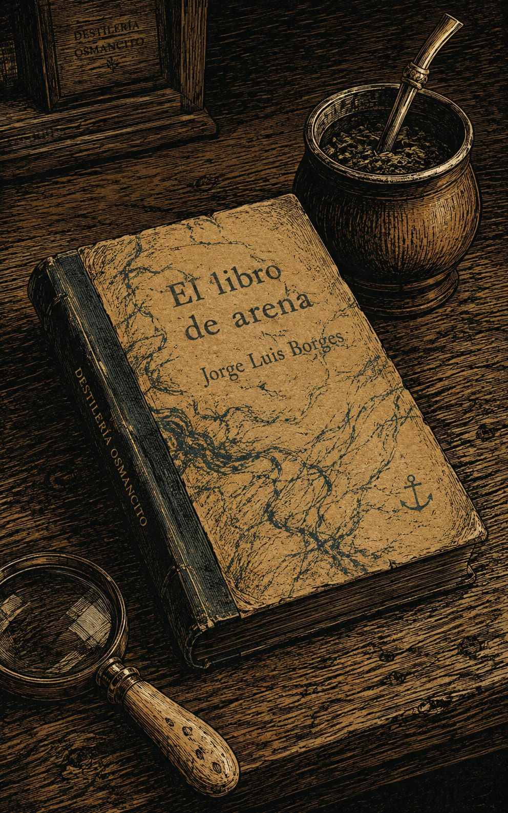
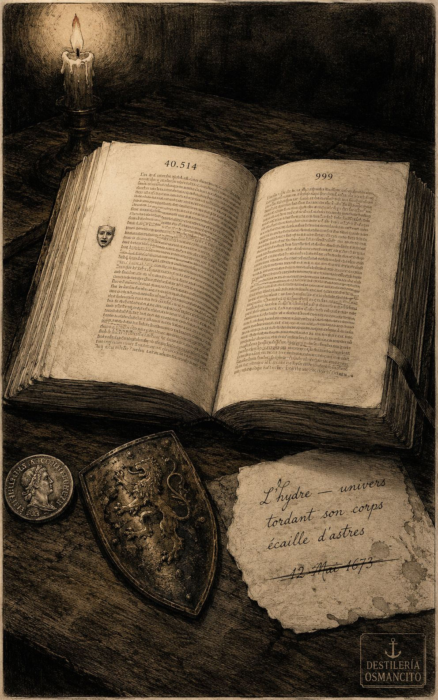
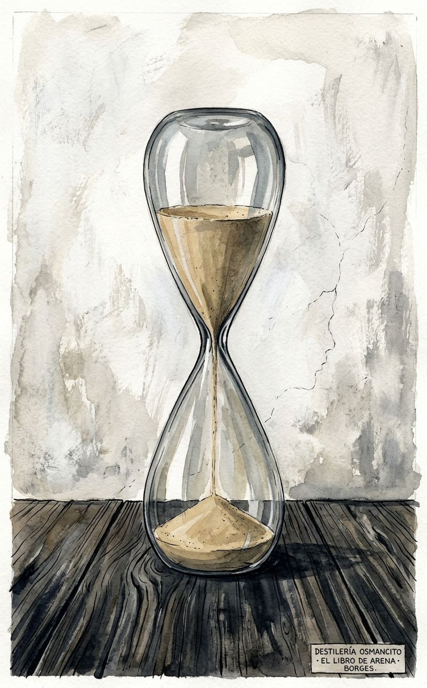
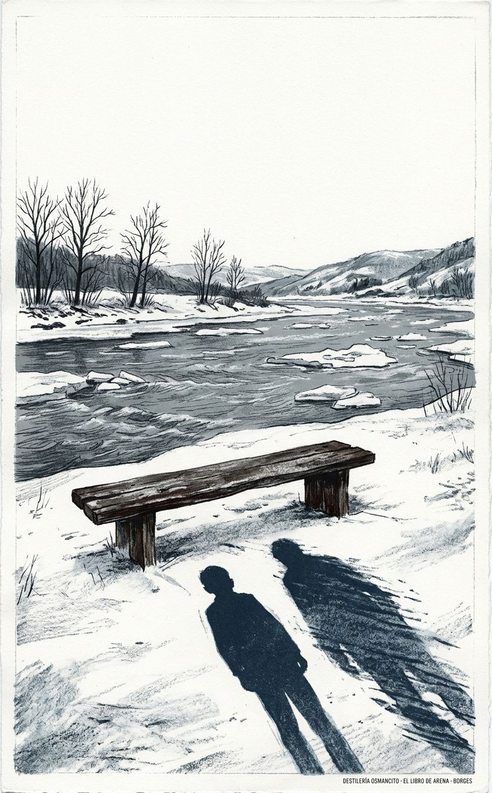
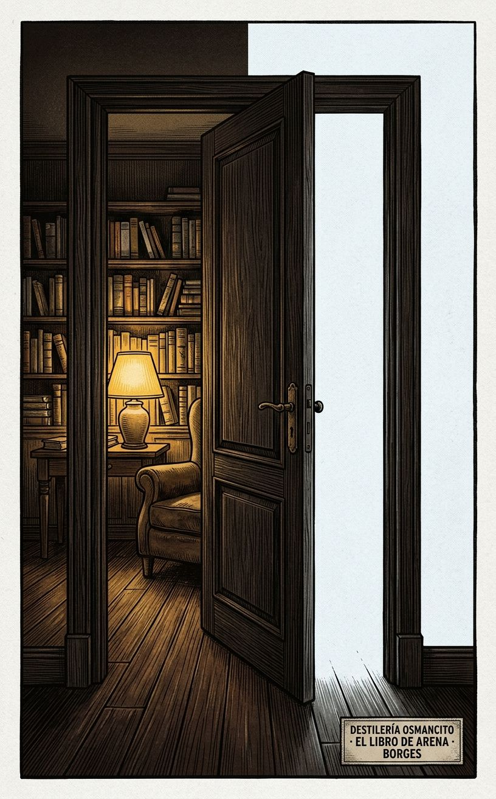

Este libro llega con el peso de lo que no se puede retener. Borges construyó catorce cuentos sobre una sola pregunta que ninguno formula en voz alta: ¿qué le ocurre a un hombre cuando toca algo infinito? La respuesta que el libro da, sin anunciarla, es que ese hombre queda solo —no enloquecido, no destruido: simplemente solo, de una soledad nueva que nadie más puede ver. Eso es lo que permanece cuando se cierra.
Un libro llega con un sonido particular. Este llega en silencio pero con peso. Arena: la palabra del título ya es física, ya pesa y escurre, ya no se puede fijar.
Nombrar lo que es un corpus es distinto de resumir lo que dice. Este corpus no dice que el infinito existe — lo mete en una habitación de la calle Belgrano y en un banco frente al río Charles y en una estancia en la frontera del Brasil. La pregunta no es qué piensa Borges sobre el tiempo. La pregunta es qué le pasa al cuerpo —al personaje, al lector— cuando el tiempo se hace visible.
Título — El libro de arena Autor — Jorge Luis Borges Año — 1975 Género — Cuento / Ficción especulativa Extensión estimada — Aproximadamente 20.400 palabras · 81 páginas (a 250 palabras/página) · 14 piezas (13 cuentos + 1 epílogo del autor) Idioma original — Español Palabra más frecuente con contenido — Tiempo. El corpus declara habitar el tiempo y lo trabaja de forma obsesiva: el tiempo como río, como peso, como trampa, como lo único que nadie puede poseer ni devolver. Confirma.
Catorce piezas en las que el infinito —el tiempo que se dobla, el libro sin fin, la palabra única, el congreso que es el universo— irrumpe en la vida cotidiana de hombres comunes y los deja alterados de una forma que no tiene nombre. Los personajes no mueren de eso, no enloquecen de forma vistosa: simplemente ya no pueden vivir igual. Borges firma los relatos como su propio narrador —un viejo ciego que enseña inglés, que fue a Cambridge, que tiene una biblioteca— y esa firma convierte cada cuento en una confesión que también podría ser ficción.
Borges narrador — el viejo que cuenta, que estuvo ahí, que no puede probar ni desmentir nada. El otro / el joven Borges — el doble de Cambridge, el que no sabe todavía lo que le espera. Don Alejandro Glencoe — el hacendado que funda el Congreso del Mundo y lo quema. El vendedor de biblias — el hombre de las Orcadas que trae el libro imposible. Ulrica — la noruega que es Brynhild y desaparece. Avelino Arredondo — el hombre que espera dos meses para matar a un presidente. El poeta irlandés — el que recibe el espejo, la máscara de oro y por último una daga.
El otro — En Cambridge, 1969, Borges anciano se sienta junto a un joven que resulta ser él mismo en 1918, en Ginebra. Hablan de libros, del futuro, de Whitman. El joven no creerá el encuentro; el viejo no podrá olvidarlo. Al despedirse, ninguno aparecerá al día siguiente en el banco acordado.
Ulrica — Un profesor colombiano llamado Javier Otárola conoce en York a una mujer noruega llamada Ulrica. Caminan por páramos, oyen un lobo, llegan a una posada que lleva el mismo nombre que otra que ya conocían. Pasan la noche juntos. Ella le dice que está por morir. Él no vuelve a verla.
El Congreso — Alejandro Ferri, ya viejo, narra cómo en Buenos Aires de principios del siglo XX participó en el Congreso del Mundo, una asamblea que pretendía representar a toda la humanidad. Don Alejandro Glencoe, el fundador, quema la biblioteca entera una noche y declara que el Congreso ya existe — es el universo mismo. Esa madrugada recorren Buenos Aires en coche abierto y sienten, una sola vez, que entienden todo.
There are more things — Un sobrino regresa a la casa de su tío en Turdera para investigar al misterioso nuevo propietario. Encuentra muebles incomprensibles, objetos de anatomía imposible. En la planta alta, algo asciende por la rampa mientras él está ahí.
La Secta de los Treinta — Manuscrito del siglo cuatro que describe una herejía: la secta venera a Judas por igual que a Cristo, pues ambos eran necesarios para la redención. Sus iniciados se crucifican a los treinta y tres años.
La noche de los dones — Un viejo cuenta en la Confitería del Águila lo que ocurrió cuando tenía trece años: una noche conoció a una mujer llamada la Cautiva en un prostíbulo de Lobos, y vio morir a Juan Moreira a manos de la policía. Amor y muerte en horas.
El espejo y la máscara — El Alto Rey de Irlanda encarga al poeta una oda a su victoria. Primera versión: perfecta, fría — recibe un espejo de plata. Segunda versión: viva, extraña, poderosa — recibe una máscara de oro. Tercera versión: una sola línea que ninguno se atreve a pronunciar en voz alta — el rey le da una daga. El poeta se suicida. El rey queda mendigo.
Undr — Ulf Sigurdarson, islandés, narra a Adán de Bremen su búsqueda de la palabra única de los urnos. Años de viaje, esclavitud, batallas. Al final regresa con el cantor moribundo y escucha la palabra — Undr, maravilla — y la hace propia cantando otra. El cantor dice: me has entendido.
Utopía de un hombre que está cansado — El narrador viaja al futuro y conversa en latín con un habitante de una sociedad que abolió las ciudades, la imprenta, la historia y los gobiernos. Cada persona vive sola, hace sus muebles, crea sus propias ciencias. A los cien años puede suicidarse. Esa noche llevan al huésped al crematorio.
El soborno — En la Universidad de Texas, el islandés Einarsson publica un artículo atacando el método del profesor Winthrop, sabiendo que Winthrop, por ser justo, lo favorecerá precisamente por eso. La estrategia funciona. Ambos lo admiten al final de una conversación.
Avelino Arredondo — En Montevideo, 1897, un joven colorado se recluye dos meses sin ver a nadie, sin leer periódicos, sin comprometerse a nadie, para mantener el crimen limpio. El día 25 de agosto sale y asesina al presidente Juan Idiarte Borda. Se entrega. Declara que el acto le pertenece.
El disco — Un leñador recibe a un rey vagabundo que guarda en la palma cerrada el disco de Odín, objeto de un solo lado. El leñador lo mata de un hachazo, arroja el cuerpo al río. El disco no aparece en la mano abierta del muerto. Desde entonces lo busca.
El libro de arena — El narrador compra a un vendedor de biblias de las Orcadas un libro de páginas infinitas: ninguna es la primera, ninguna la última, los números son arbitrarios, las ilustraciones no vuelven a aparecer. El libro comienza a dominar su vida. Lo esconde en la Biblioteca Nacional, entre miles de libros, en un anaquel del sótano. No quiere ni pasar por la calle México.
Epílogo — Borges anota brevemente el origen o la intención de cada pieza. El doble. El amor raro de Ulrica. El Congreso como su ficción más ambiciosa. Lovecraft como parodia involuntaria de Poe. La balada de Maldon. La palabra única. Y la declaración final: dos objetos adversos e inconcebibles — el disco con un solo lado, el libro con infinitas páginas.
El corpus es un libro de manos. Manos que palpan un disco que no se puede ver, que buscan la primera página y no la encuentran, que sostienen una daga después de haber sostenido un espejo y una máscara. Borges no escribe sobre el infinito desde afuera — lo hace entrar por la puerta, lo sienta en la mesa, lo pone a hablar en latín, lo vende por unas rupias y una Biblia gótica. El efecto no es asombro: es el reconocimiento levemente aterrador de que el universo ya era esto, y uno no lo había notado.
Posesión e imposibilidad — Los personajes desean, adquieren y no pueden retener. El libro infinito, el disco de Odín, la noche con Ulrica, el momento del Congreso: todo lo que importa es intransferible y por eso inalcanzable incluso cuando se tiene en la mano.
El testigo y el tiempo — Quién recuerda, desde dónde, cuánto tiempo después, qué queda cuando la memoria trabaja lo suficiente como para que la historia y las palabras se vuelvan lo mismo. Borges narrador y Borges personaje son la misma trampa: el testigo que no puede saber si recuerda o si ya solo repite.
La escala de lo sagrado — Qué hace que algo sea irrepetible, intransferible, digno de muerte o de mendiguez. El poeta que recibe la daga. Arredondo que espera dos meses. El leñador que mata por un objeto que luego no puede encontrar. El corpus trabaja sin descanso la pregunta de cuánto vale lo que no se puede nombrar.
En la otra punta del banco alguien se había sentado. Lo que silbaba era el estilo criollo de La tapera de Elías Regules. La voz no era la de Álvaro, pero quería parecerse a la de Álvaro. La reconocí con horror.
El joven Borges —diecinueve años, Ginebra, 1918— escucha al viejo Borges —setenta, Cambridge, 1969— con la misma mezcla de fastidio y terror con que se escucha una verdad que uno no estaba listo para recibir. Hablan de Whitman, de metáforas, de la guerra que viene. El muchacho dice que su libro se llamará Los himnos rojos y que cantará la fraternidad de todos los hombres. El viejo le responde: Tu masa de oprimidos y de parias no es más que una abstracción. Solo los individuos existen, si es que existe alguien. Y luego, casi sin querer, le recita un verso de Hugo que el joven nunca ha leído y nunca podrá escribir. El muchacho lo repite en voz baja, saboreando cada palabra, y admite: Yo no podré nunca escribir una línea como ésa.
Ahí está la trampa. Si el viejo es el joven, el joven acaba de oír que nunca podrá escribir lo que el viejo ya escribió. El encuentro es una paradoja con forma de tarde junto al río.
Para probar que no están soñando, el viejo saca un billete americano. El joven lo examina y grita: ¡Lleva la fecha de mil novecientos setenta y cuatro! El viejo hace pedazos el billete. Pero más tarde alguien le dirá que los billetes de banco no llevan fecha. La prueba era falsa. Lo milagroso era el error.
Se despiden sin haberse tocado. Al día siguiente ninguno regresa al banco. El viejo concluirá, años después, que el otro lo soñó mientras él lo vivía. Por eso el otro pudo olvidar: soñó. Por eso él no puede: estuvo despierto. Es la misma asimetría que separa al que ama del que es amado, al que recuerda del que olvida, al que cuenta del que escucha.
Don Alejandro Glencoe llega esa noche diferente. Su voz no es la del pausado señor que presidía los sábados ni la del estanciero que prohibía duelos a cuchillo. Sin mirar a nadie, manda sacar todo lo que hay en el sótano. Enciclopedias, atlas, colecciones enteras de periódicos, tres mil cuatrocientos ejemplares del Quijote en distintos formatos, el epistolario de Balmes, tesis universitarias. Todo al patio. Después: Ahora le prenden fuego a estos bultos.
Twirl, el arquitecto de cuatro años de acumulación bibliográfica, está muy pálido. Alguien murmura que el Congreso del Mundo no puede prescindir de esos auxiliares preciosos. Don Alejandro se ríe, y el narrador nunca lo había oído reír.
Hay un misterioso placer en la destrucción. Las llamas crepitan. Ceniza, noche y olor a quemado. Unas hojas perdidas que se salvaron, blancas sobre la tierra.
Entonces llega la revelación: La empresa que hemos acometido es tan vasta que abarca —ahora lo sé— el mundo entero. No es unos cuantos charlatanes que aturden en los galpones de una estancia perdida. El Congreso del Mundo comenzó con el primer instante del mundo y proseguirá cuando seamos polvo. No hay un lugar en que no esté. El Congreso es los libros que hemos quemado. El Congreso es los caledonios que derrotaron a las legiones de los Césares. El Congreso es Job en el muladar y Cristo en la cruz. El Congreso es aquel muchacho inútil que malgasta mi hacienda con las rameras.
El narrador lo interrumpe para confesar que también él malgastó tiempo y dinero en Londres por amor a una mujer. Don Alejandro dice que ya lo suponía. Luego anuncia que ha vendido La Caledonia, que ya no le queda un palmo de tierra, y que esa noche saldrán todos a mirar el Congreso.
Toman un coche abierto. Recorren Buenos Aires sin rumbo. Las ruedas y los cascos retumban sobre las piedras. Cerca del alba, junto a una agua oscura que tal vez era el Maldonado, Nora Erfjord entona la balada de Patrick Spens. Twirl murmura: He querido hacer el mal y hago el bien. El narrador no habla de lo que vieron porque las palabras son símbolos que postulan una memoria compartida, y esa memoria es suya sola: quienes la compartieron han muerto.
Lo que sí dice es que, sin mayor esperanza, ha buscado a lo largo de los años el sabor de esa noche. Alguna vez creyó recuperarla en la música, en el amor, en la incierta memoria. No ha vuelto, salvo una sola madrugada, en un sueño.
El Alto Rey de Irlanda le da al poeta un año para escribir la oda a su victoria. El poeta regresa con una obra perfecta: aliteraciones, asonancias, epítetos clásicos, rima impecable. El Rey la aprueba con estas palabras: Todo está bien y sin embargo nada ha pasado. En los pulsos no corre más a prisa la sangre. Las manos no han buscado los arcos. Nadie ha palidecido. Le da un espejo de plata y le pide otra loa.
La segunda oda es extraña. Un sustantivo singular puede regir un verbo plural. Las metáforas son arbitrarias o así lo parecen. No describe la batalla: es la batalla. El Rey dice que supera todo lo anterior y también lo aniquila. Le da una máscara de oro y le anuncia que en las fábulas prima el número tres.
El tercer año, el poeta llega sin manuscrito. Casi es otro. Algo que no es el tiempo ha surcado y transformado sus rasgos. Le pide al Rey que hable unas palabras con él a solas. Entonces dice el poema: es una sola línea. Sin animarse a pronunciarla en voz alta, los dos la paladean como si fuera una plegaria secreta o una blasfemia. Ambos quedan muy pálidos.
En los años de mi juventud —dice el Rey— navegué hacia el ocaso. En una isla vi lebreles de plata que daban muerte a jabalíes de oro. En otra nos alimentamos con la fragancia de las manzanas mágicas. En otra vi murallas de fuego. En la más lejana de todas un río abovedado y pendiente surcaba el cielo y por sus aguas iban peces y barcos. Éstas son maravillas, pero no se comparan con tu poema, que de algún modo las encierra.
El poeta confiesa que sintió haber cometido un pecado, quizá el que no perdona el Espíritu. El Rey dice que ahora ese pecado lo comparten los dos: haber conocido la Belleza, que es un don vedado a los hombres. Le pone en la diestra una daga.
Del poeta se sabe que se dio muerte al salir del palacio. Del Rey, que es un mendigo que recorre los caminos de Irlanda y no ha repetido nunca el poema.
Bjarni Thorkelsson le dice al islandés Ulf Sigurdarson, después de años de búsqueda, de esclavitud y de mar: Ahora no definimos cada hecho que enciende nuestro canto; lo ciframos en una sola palabra que es la Palabra. Y se niega a decirla: nadie puede enseñar nada, hay que buscarla solo.
Ulf busca durante inviernos. Al final vuelve con el cantor moribundo, que ya no puede tenerse. Le pregunta qué le dio la primera mujer que tuvo. Ulf contesta: Todo. El cantor dice: A mí también la vida me dio todo. A todos la vida les da todo, pero los más lo ignoran.
Entonces dice la palabra: Undr. Maravilla.
Ulf no la repite. Toma el arpa y canta con una palabra distinta. El cantor, que apenas puede hablar, dice: Está bien. Me has entendido.
El narrador de El libro de arena busca la figura del ancla que vio en una página y no puede encontrarla. Abre el libro aquí, lo abre allá. La ilustración no vuelve. Le explican entonces: el número de páginas de este libro es exactamente infinito. Ninguna es la primera; ninguna, la última.
Compra el libro a cambio de su jubilación y de la Biblia de Wiclif en letra gótica. El vendedor de las Orcadas no regatea: llevaba el libro con la decisión de venderlo.
Al principio el narrador siente dicha. Después, miedo a que lo roben. Después, el recelo de que no sea verdaderamente infinito. Sus amigos desaparecen. Casi no sale a la calle. Examina el libro con lupa, anota las ilustraciones en una libreta alfabética que llena pronto. Ninguna se repite. En los escasos intervalos del insomnio, sueña con el libro.
Declina el verano y comprende que el libro es monstruoso. Que no menos monstruoso es él, que lo percibe con ojos y lo palpa con diez dedos con uñas. Piensa en el fuego pero teme que la combustión de un libro infinito sea parejamente infinita y sofoque de humo al planeta.
Recuerda haber leído que el mejor lugar para ocultar una hoja es un bosque. Fue empleado de la Biblioteca Nacional, que guarda novecientos mil libros. Un día aprovecha un descuido de los empleados y pierde el libro en uno de los húmedos anaqueles del sótano. Trata de no fijarse a qué altura ni a qué distancia de la puerta.
Siento un poco de alivio, pero no quiero ni pasar por la calle México.
Borges anciano —setenta años, Cambridge, febrero de 1969— está recostado en un banco frente al río Charles. El agua gris lleva trozos de hielo. Alguien se sienta en el otro extremo del banco y silba La tapera de Elías Regules, con una voz que quiere parecerse a la de Álvaro Melián Lafinur. El narrador reconoce esa voz con horror.
Borges se acerca y le pregunta al desconocido si es oriental o argentino. El otro contesta que es argentino pero que desde el catorce vive en Ginebra. A partir de ahí, el reconocimiento se produce en escalones: la dirección de Malagnou frente a la iglesia rusa, el nombre, la fecha. El joven no acepta nada. Opone, con bastante rigor, la objeción central: si él está soñando al viejo, naturalmente conoce todo lo que el viejo conoce. El viejo le da la razón y replantea el problema: los dos deben aceptar el sueño como se acepta el universo.
El viejo le cuenta el futuro: la muerte del padre —hemiplejia, impaciencia, ninguna queja—, las palabras finales de la abuela, el matrimonio de Norah. El joven pregunta por los libros que el viejo escribirá. El viejo le dice que son demasiados, que serán poesías y cuentos fantásticos, que dará clases. El joven no pregunta por el éxito de esos libros, detalle que al viejo le agrada.
Hablan de metáforas. El viejo cree en las que corresponden a afinidades íntimas y ya aceptadas —el ocaso, el sueño, el río—; el joven cree en la invención de metáforas nuevas. El joven dice que su libro se llamará Los himnos rojos y cantará la fraternidad de todos los hombres. El viejo replica que su masa de oprimidos y parias no es más que una abstracción, que solo los individuos existen.
El viejo recita de memoria el verso de Hugo: L’hydre — univers tordant son corps écaillé d’astres. El joven lo repite en voz baja, saboreando cada palabra, y admite que nunca podrá escribir una línea como esa. Luego hablan de Whitman. El viejo opina que el poema de la noche compartida ante el mar es la manifestación de un anhelo, no la historia de un hecho. El joven protesta: Whitman es incapaz de mentir.
Para dar una prueba material de que el encuentro no es un sueño, el viejo ofrece un billete americano. El joven lo mira y grita: lleva la fecha de 1974. El viejo hace pedazos el billete. El joven guarda el escudo de plata. El viejo propone encontrarse al día siguiente en ese mismo banco. Ambos mienten; ambos lo saben.
Se despiden sin haberse tocado. Al día siguiente ninguno regresa. El viejo concluye, años más tarde, que el encuentro fue real pero asimétrico: el joven lo soñó y por eso pudo olvidarlo; el viejo estuvo despierto y por eso no puede. Lo milagroso final es que los billetes de banco no llevan fecha: la prueba era falsa, y lo milagroso era el error.
Javier Otárola, profesor colombiano de la Universidad de los Andes, conoce a Ulrica en York, en el Northern Inn. Ella es noruega, alta, de rasgos afilados y ojos grises, vestida de negro. Habla un inglés preciso con las erres levemente marcadas. Dice que es feminista y no bebe alcohol. Dice que los noruegos ya estuvieron en York: Inglaterra fue suya y la perdieron, si alguien puede tener algo.
Al día siguiente salen a caminar sobre la nieve. Otárola propone ir a Thorgate, río abajo. Oyen el aullido lejano de un lobo. Ulrica no se inmuta. Hablan de De Quincey y de su Anna perdida; ella dice que tal vez Otárola ya la encontró. Él la besa en la boca y los ojos. Ella lo aparta con firmeza y declara que será suya en la posada de Thorgate, pero que hasta entonces no la toque.
Caminan tomados de la mano. Ella dice que todo es como un sueño. Él dice que quisiera que ese momento durara siempre; ella responde que siempre es una palabra que no está permitida a los hombres. Lo llama Sigurd. Él la llama Brynhild. Ella conoce la saga. Él le dice que camina como si quisiera que hubiera una espada en el lecho entre los dos.
Llegan a la posada y también se llama Northern Inn. Las paredes están empapeladas con motivos de William Morris, rojo profundo con pájaros y frutos. El lecho se duplica en un espejo de caoba. Ella lo llama por su nombre verdadero. No hay una espada entre los dos. Como la arena se va el tiempo. El narrador posee por primera y última vez la imagen de Ulrica.
Alejandro Ferri, de más de setenta años, dicta clases de inglés en la calle Santiago del Estero, vive solo y se siente el último guardián de un acontecimiento que no puede compartir con nadie porque quienes lo vivieron han muerto.
Ferri llega a Buenos Aires desde Santa Fe en 1899. Trabaja en la redacción de Última Hora. Su colega Fernández Irala lo lleva un sábado a la Confitería del Gas, donde se reúne el Congreso del Mundo. Lo preside don Alejandro Glencoe, estanciero oriental de origen escocés, hombre de levita oscura y barba rojiza entrecana, que fue bloqueado cuando quiso ser diputado y decidió fundar un congreso más vasto, movido por la figura de Anacharsis Cloots ante la Asamblea de París. A su izquierda, Twirl, hombre alto y frágil de bigote rojo que juega con una brújula de cobre. A su derecha, Fermín Eguren, sobrino del presidente, joven de frente baja y traje de dandy. Hay también un ingeniero inglés, la secretaria noruega Nora Erfjord, un pastor protestante, dos judíos, un negro de pañuelo de seda, un niño de diez años que se queda dormido.
El proyecto es representar a todos los hombres de todas las naciones. Twirl señala el problema filosófico: ¿cuántos arquetipos son necesarios? El Congreso crece: primero una biblioteca de consulta, luego obras clásicas de todas las naciones. Nierenstein gestiona enciclopedias, atlas, los tres mil cuatrocientos ejemplares del Quijote en distintos formatos, el epistolario de Balmes.
Ferri viaja con Irala a La Caledonia, estancia de Glencoe en la frontera con Brasil. La casa es larga, de adobe, techo de paja, muros de casi un palmo de espesor. Los peones hablan un español abrabilaserado. Don Alejandro en la estancia es otro hombre: jefe severo de un clan que separa a dos que se agarran a cuchillo poniéndose entre los aceros.
Ferri viaja a Londres. En la sala de lectura del Museo Británico conoce a Beatriz Frost, estudiante de letras del Norte, alta, esbelta, de cabellera bermeja. Meses de amor; ella no quiere casarse por fidelidad a Ibsen. Ferri no le deja su dirección al partir. En el barco de vuelta rompe una carta de muchas páginas.
Una tarde, Ferri e Irala llegan a casa de don Alejandro. Don Alejandro llega con una voz que nunca le habían oído. Manda sacar todo lo del sótano al patio —enciclopedias, atlas, los tres mil cuatrocientos Quijotes, tesis universitarias— y prenderle fuego. Twirl está muy pálido. Nierenstein murmura que el Congreso no puede prescindir de esos auxiliares. Don Alejandro se ríe.
Las llamas crepitan. Ceniza, noche y olor a quemado. Unas hojas blancas en la tierra.
Entonces la revelación: el Congreso comenzó con el primer instante del mundo y no hay un lugar en que no esté. Es los libros quemados, los caledonios que derrotaron a las legiones de los Césares, Job en el muladar, Cristo en la cruz, el muchacho inútil que malgasta su hacienda. Ferri confiesa que también él malgastó tiempo en Londres por una mujer. Don Alejandro dice que ya lo suponía. Ha vendido La Caledonia: ya no le queda un palmo de tierra. Esa noche saldrán a ver el Congreso.
Toman un coche abierto. Recorren Buenos Aires sin rumbo. Cerca del alba, junto a un agua oscura que tal vez es el Maldonado, Nora Erfjord entona la balada de Patrick Spens. Twirl murmura: he querido hacer el mal y hago el bien. El narrador no puede describir lo que vieron porque las palabras postulan una memoria compartida y esa memoria es solo suya. Sin mayor esperanza, durante años buscó el sabor de esa noche. Solo volvió, una vez, en un sueño.
El narrador, sobrino de Edwin Arnett, regresa a Turdera cuando un extraño llamado Max Preetorius compró la Casa Colorada de su tío y tiró todos los muebles y libros. Preetorius mandó hacer muebles nuevos de noche, a puertas cerradas; un carpintero de Glew los fabricó sin entender bien los planos. El ovejero de su tío apareció decapitado y mutilado. Las araucarias fueron taladas.
El narrador consulta a Alexander Muir, que rechazó diseñar algo monstruoso para Preetorius. El cuchillero Daniel Iberra le cuenta que una noche su caballo se espantó al ver algo que no puede nombrar.
Una noche de tormenta, el narrador entra en la casa. El piso ha sido levantado; hay pasto desgreñado dentro. Un olor dulce y nauseabundo. Una rampa de piedra donde antes había escalones. En la planta baja, el comedor y la biblioteca unidos en una gran pieza. Los muebles son incomprensibles: ninguna de sus formas corresponde a la figura humana ni a un uso concebible.
Sube. En el piso superior las formas se agrandan y entrelazan: algo como una larga mesa operatoria en U con hoyos circulares en los extremos, tal vez el lecho del habitante cuya anatomía monstruosa se revela así oblicuamente. Una V de espejos que se pierde en la tiniebla. Son casi las dos de la mañana. Emprende el descenso. Cuando sus pies tocan el penúltimo tramo, siente que algo asciende por la rampa: opresivo, lento y plural. La curiosidad pudo más que el miedo. No cerró los ojos. El relato termina ahí.
Manuscrito latino del siglo cuarto. El autor anónimo narra las costumbres de la secta: no puede construir viviendas, anda desnuda, da todo lo que posee en cadena de donaciones hasta el fin. Interpreta que todos hemos adulterado de corazón y por tanto los justos pueden entregarse sin riesgo a cualquier lujuria.
La teología central: en la tragedia de la Cruz hubo actores involuntarios —los sacerdotes, la plebe, Pilato, los romanos— y solo dos voluntarios: el Redentor y Judas. Judas arrojó las treinta piezas y se ahorcó a los treinta y tres años, como el Hijo del Hombre. La secta los venera por igual. No hay culpable; todos son ejecutores del plan de la Sabiduría; todos comparten la Gloria.
Los iniciados, al cumplir la edad señalada, se hacen escarnecer y crucificar en lo alto de un monte. El manuscrito se corta en las imprecaciones del autor.
En la Confitería del Águila, durante una discusión sobre el conocimiento, un señor de edad cuenta lo que ocurrió la noche del treinta de abril de 1874, cuando tenía trece años. Estaba veraneando cerca de Lobos. Un peón llamado Rufino lo llevó al pueblo a un prostíbulo llamado La Estrella. Allí una mujer a quien llamaban la Cautiva contó la historia del malón que la capturó de chica, con la textura de la oración repetida.
Irrumpieron borrachos orilleros. Alguien dijo: es Juan Moreira. El cuzco salió a hacerle fiestas y Moreira lo tumbó; el perro murió moviendo las patas. El muchacho ganó sin ruido una puerta y subió a una pieza oscura. La Cautiva lo siguió. Ya se había quitado el batón. Se tendieron juntos. No hubo palabras ni beso. Un disparo los interrumpió. Ella le dijo que saliera por la otra escalera.
En la calle de tierra, noche de luna, un sargento vio bajar al muchacho y rió. Un hombre se descolgó por la tapia. El sargento le clavó la bayoneta. El hombre cayó al suelo. El sargento le hundió el acero de nuevo con una suerte de alegría: Moreira, lo que es hoy de nada te valió disparar.
El narrador concluye: en el término de unas horas conoció el amor y vio morir a un hombre. El tiempo pasa, cuenta tantas veces la historia que ya no sabe si recuerda de veras o solo recuerda las palabras con que la cuenta. Tal vez lo mismo le ocurrió a la Cautiva con su malón. Ya no sabe si fue él u otro el que vio matar a Moreira.
El Alto Rey de Irlanda vence en Clontarf y encarga al poeta —el Ollan— una oda. Plazo de un año.
El poeta regresa con una obra perfecta: aliteraciones, asonancias, epítetos clásicos. El Rey la aprueba pero señala que nada ha pasado: la sangre no corre más a prisa, nadie ha buscado los arcos. Da un espejo de plata y pide otra loa.
El segundo año el poeta entrega algo extraño: la sintaxis es irregular, las metáforas arbitrarias, el texto no describe la batalla sino que es la batalla. El Rey dice que supera todo lo anterior y también lo aniquila. Da una máscara de oro. Anuncia que en las fábulas prima el número tres.
El tercer año el poeta llega sin manuscrito. Algo que no es el tiempo ha transformado sus rasgos. Pide hablar a solas. Recita el poema: es una sola línea. Ambos la paladean sin animarse a pronunciarla en voz alta. Ambos quedan muy pálidos.
El Rey habla de los prodigios de su juventud —lebreles de plata que mataban jabalíes de oro, manzanas mágicas, murallas de fuego, un río que surcaba el cielo con peces y barcos— y dice que ninguna maravilla se compara con el poema, que de algún modo las encierra.
El poeta dice que sintió haber cometido el pecado que no perdona el Espíritu. El Rey dice que ese pecado ahora lo comparten: haber conocido la Belleza, don vedado a los hombres. Le pone en la diestra una daga.
Del poeta: se dio muerte al salir del palacio. Del Rey: mendigo que recorre los caminos de Irlanda y nunca ha repetido el poema.
Ulf Sigurdarson, islandés de estirpe de skalds, viaja a la tierra de los urnos al saber que su poesía consta de una sola palabra. Llega de noche; le arrojan piedras. Se refugia en la herrería de un hombre llamado Orm. El rey Gunnlaug crucifica a los forasteros. Ulf compone y memoriza una drápa laudatoria. Lo llevan ante el rey; la canta hincado; recibe un anillo de plata. Otro hombre toma el arpa y repite en voz baja una palabra que Ulf no consigue penetrar. Los presentes lloran. El canto cesa; el cantor arroja el arpa.
Al salir, Bjarni Thorkelsson lo detiene: morirá por haber oído la Palabra. Lo protegerá porque reconoció en la drápa figuras que aprendió del padre de su padre. La poesía de los urnos ya no define cada hecho sino que lo cifra en una sola palabra. No puede enseñársela: nadie puede enseñar nada.
Ulf busca durante inviernos. Trabaja de remero, mercader de esclavos, esclavo, leñador, salteador de caravanas, cantor. Sufre cautiverio en minas de azogue. Sirve en la guardia de Constantinopla. Una mujer que no olvidará. Un epitafio rúnico para un compañero muerto. Combate con los sarracenos. Un soldado griego le ofrece dos espadas; Ulf elige la más corta: de su puño al corazón del otro, la distancia es igual.
Vuelve a la tierra de los urnos. Bjarni está en el suelo, casi moribundo. Le pregunta qué le dio la primera mujer que tuvo. Ulf contesta: todo. Bjarni dice que a él también la vida le dio todo, y que los más lo ignoran. Dice la palabra: Undr. Maravilla.
Ulf no la repite. Toma el arpa y canta con una palabra distinta. El cantor moribundo dice: está bien. Me has entendido.
El narrador camina por una llanura —Oklahoma, Texas o la pampa— bajo la lluvia. Llega a una casa baja. Un hombre muy alto, vestido de gris, le abre sin cerrojo. En la mesa hay una clepsidra. Solo se entienden en latín. La tierra ha regresado al latín porque la diversidad de lenguas favorecía las guerras.
El narrador se presenta: Eudoro Acevedo, setenta años, Buenos Aires, 1897, profesor de letras inglesas, escritor de cuentos fantásticos. El anfitrión no tiene nombre: le dicen alguien. Ya nadie le importan los hechos: son puntos de partida para la invención. No hay cronología, ni historia, ni estadísticas. Cenan: copos de maíz, uvas, una fruta parecida al higo, agua.
El anfitrión le muestra un ejemplar de la Utopía de More impreso en Basilea en 1518. Nadie puede leer dos mil libros; en cuatro siglos no habrá pasado de una media docena. La imprenta fue abolida: multiplicaba textos innecesarios.
El narrador describe su ayer: espectros colectivos como el Canadá o el Mercado Común, políticos que necesitaban vehículos ruidosos, la realidad menos real que sus imágenes. El anfitrión: ya no hay pobreza ni riqueza. No hay ciudades. A los cien años el hombre puede suicidarse. Cada uno produce su propia ciencia y su propio arte. Los gobiernos cayeron en desuso porque nadie los acataba.
El anfitrión muestra sus telas, sus muebles, su arpa. Una tela pequeña, la más pequeña, figura una puesta de sol y encierra algo infinito; se la ofrece de recuerdo. Otras telas están pintadas con colores que los ojos del narrador no pueden ver.
Golpean a la puerta. Entran una mujer alta y varios hombres. Vacían la casa: manuscritos, cuadros, muebles, enseres. Caminan quince minutos. Al fondo hay una torre con cúpula: el crematorio. Alguien menciona que lo inventó un filántropo llamado Adolfo Hitler. El anfitrión entra. Se despide con un ademán.
El narrador termina en su escritorio de la calle México, donde guarda la tela que alguien pintará dentro de miles de años.
En la Universidad de Texas, el doctor Ezra Winthrop —profesor de inglés antiguo, raíz puritana, oriundo de Boston— debe recomendar a un representante para un congreso en Wisconsin. Los candidatos son Herbert Locke, su amigo de veinte años, y Eric Einarsson, islandés impetuoso que llegó en 1969 con una edición crítica de la balada de Maldon.
Poco antes de decidir, aparece en el Yale Monthly un artículo firmado E.E. que critica el método pedagógico de Winthrop: iniciar el estudio del inglés antiguo por Beowulf es tan arbitrario como iniciarlo por Milton. Winthrop se siente agredido pero elige a Einarsson.
Al día siguiente Einarsson viene a despedirse y lo explica todo: en el primer diálogo que tuvieron, advirtió que Winthrop es hombre de la pasión americana por la imparcialidad —capaz de defender la causa del Sur precisamente porque es del Norte—. Atacar su metodología era el modo más eficaz de obtener su voto: Winthrop no podría dejarse ver como alguien que se venga de quien lo critica.
Winthrop admite que cedió a la vanidad de no ser vengativo. Ambos reconocen que un pecado los une: la vanidad, ejercida de modo distinto. Winthrop lo llama su primer vikingo. Einarsson corrige: es ciudadano americano; en su familia no hubo gente de mar. Se dan la mano y se despiden.
Montevideo, 1897. Arredondo es joven, flaco, moreno, dependiente de una mercería que estudia Derecho a ratos perdidos. Cuando los amigos del café condenan la guerra que el presidente prolonga por razones indignas, él se queda callado.
Después de la batalla de Cerros Blancos, anuncia que se irá a Mercedes. Le dice adiós a Clara con palabras semejantes. La parda que lo atiende recibirá instrucciones de decir que está en el campo. Cobra el último sueldo y se recluye en la pieza del fondo.
Vende todos sus libros menos una Biblia que no ha leído y que recorre sin tratar de entenderla, aprendiendo de memoria algunos capítulos. Reza el padrenuestro que prometió a su madre. Sabe que su meta es el 25 de agosto. Paró el reloj; cada noche arranca una hoja del almanaque y piensa: un día menos.
Al principio intenta una rutina. Los días son iguales; los domingos pesan más. A mediados de julio deja errar la imaginación por la tierra oriental. Piensa lo menos posible en el hombre que odia.
Una noche sale a la calle. En un almacén, unos soldados cuentan cómo quemaron a balazos un fonógrafo que seguía hablando en la redacción de La Razón, creyendo que alguien contravenía la prohibición de dar noticias de las batallas. Uno de los soldados le pide que grite: ¡Viva el Presidente Juan Idiarte Borda! Arredondo obedece. Lo dejan ir entre aplausos burlones. En la calle lo sigue una injuria: el miedo no es sonso ni junta rabia. Vuelve despacio. Sabe que no es un cobarde.
El 25 de agosto se despierta pasadas las nueve. Se afeita. Elige una corbata colorada. Almuerza tarde. Da a la parda los últimos pesos. Camina a la Plaza Matriz. El Te Deum ya concluido; un grupo de caballeros, militares y prelados baja por las gradas. Pregunta cuál es el presidente. Saca el revólver y dispara.
Idiarte Borda da unos pasos, cae de bruces y dice claramente: Estoy muerto.
Arredondo se entrega. Declara que es colorado y lo dice con orgullo; que dio muerte al presidente que traicionaba al partido; que rompió con los amigos y con la novia para no complicarlos; que no miró diarios para que nadie pueda decir que lo incitaron; que el acto le pertenece. Pide que lo juzguen. Lo condenan a un mes de reclusión celular y a cinco años de cárcel. Una calle de Montevideo lleva hoy su nombre.
Un leñador viejo, casi ciego, recibe una noche a un desconocido: hombre alto, envuelto en una manta raída, con una cicatriz y un bastón. Le da pan y pescado. Al día siguiente, al caérsele el bastón, el anciano le ordena que lo recoja. El leñador pregunta por qué ha de obedecer. El anciano contesta que es un rey: Isern, rey de los Secgens, de la estirpe de Odín.
El leñador venera a Cristo. El anciano dice que aún es el rey porque tiene el disco. Abre la palma: no hay nada. El leñador advierte que siempre la había tenido cerrada. Lo invita a tocar. El leñador pone la punta de los dedos sobre la palma y siente algo frío y ve un brillo. La mano se cierra. El disco de Odín tiene un solo lado: en la tierra no hay otra cosa que tenga un solo lado.
El leñador siente codicia. Ofrece un cofre de monedas de oro. El anciano dice que no. El leñador le dice que puede proseguir su camino. El anciano le da la espalda. Un hachazo en la nuca lo derriba. Al caer, abre la mano. En el aire se ve el brillo. El leñador marca el lugar, arrastra el cadáver hasta el arroyo crecido y lo arroja. Vuelve a buscar el disco. No lo encuentra. Hace años que sigue buscando.
El narrador vive solo en un cuarto piso de la calle Belgrano. Al atardecer llega un hombre de las Orcadas que vende biblias. El narrador tiene varias. El vendedor saca de la valija un volumen en octavo, encuadernado en tela, de inusitado peso, con el lomo Holy Writ y abajo Bombay. Lo abre al azar: caracteres extraños, páginas a dos columnas, el número 40.514 en la página par y 999 en la impar siguiente. Una pequeña ilustración: un ancla dibujada torpemente a la pluma.
El vendedor le dice que mire bien el ancla porque no volverá a verla. El narrador cierra el libro y lo vuelve a abrir: en vano busca el ancla. El vendedor explica: ninguna página es la primera; ninguna, la última. Al intentar encontrar la primera hoja, siempre se interponen varias páginas entre la portada y la mano, como si brotaran del libro.
El vendedor adquirió el libro en la llanura de Bikanir a cambio de unas rupias y de la Biblia. El narrador ofrece el monto de su jubilación y la Biblia de Wiclif en letra gótica. El vendedor acepta sin regatear; había entrado ya con la decisión de vender.
Al principio el narrador siente dicha. Luego miedo a que lo roben. Luego el recelo de que no sea verdaderamente infinito. Examina el libro con lupa, anota las ilustraciones en una libreta: ninguna se repite. En los intervalos del insomnio sueña con el libro. Sus amigos desaparecen; casi no sale a la calle.
Al declinar el verano comprende que el libro es monstruoso. También él lo es: lo percibe con ojos y lo palpa con diez dedos con uñas. Piensa en el fuego: teme que la combustión de un libro infinito sofoque de humo al planeta.
Recuerda que el mejor lugar para ocultar una hoja es un bosque. Fue empleado de la Biblioteca Nacional, que guarda novecientos mil libros. Un día aprovecha un descuido de los empleados y pierde el libro en uno de los húmedos anaqueles del sótano. Trata de no fijarse a qué altura ni a qué distancia de la puerta.
Siente un poco de alivio. Pero no quiere ni pasar por la calle México.
Borges escribe el epílogo en Buenos Aires el 3 de febrero de 1975. Anota brevemente el origen o intención de cada pieza. El otro retoma el tema del doble —fetch, wraith of the living, Doppelgaenger—; lo concibió a orillas del río Charles. Ulrica es el único ejemplo de tema amoroso en su prosa. El Congreso es la más ambiciosa: su tema se confunde al fin con el cosmos y la suma de los días; el principio quiso imitar a Kafka, el fin a Chesterton o a Bunyan. There are more things es un cuento póstumo de Lovecraft, a quien siempre juzgó parodista involuntario de Poe; no quería escribirlo. La secta de los treinta rescata sin apoyo documental una herejía posible. La noche de los dones es el relato más inocente, más violento y más exaltado. Undr y El espejo y la máscara son literaturas seculares que constan de una sola palabra. Utopía de un hombre que está cansado es la pieza más honesta y melancólica. El soborno quiere reflejar la obsesión ética de los americanos del Norte. Avelino Arredondo: Borges no aprueba el asesinato político; señala el fin real: condenado a un mes de reclusión celular y a cinco años de cárcel; una calle de Montevideo lleva su nombre. Los dos últimos cuentos son objetos adversos e inconcebibles: el disco euclidiano de un solo lado, el libro de páginas infinitas.
Espera que sus notas no agoten el libro y que sus sueños sigan ramificándose en la hospitalaria imaginación de quienes ahora lo cierran.
En este corpus nadie actúa dos veces: cada personaje tiene un solo momento y ese momento lo define para siempre. Lo que Borges narra una y otra vez, con distintos nombres y distintos siglos, es el instante en que un hombre toca algo que no debería existir y luego pasa el resto de su vida sin poder encontrarlo de nuevo ni deshacerse de él. Los eventos no progresan —concluyen. Y la conclusión siempre es una forma de soledad.
[El otro, inicio] — El viejo Borges reconoce su propia voz. Un hombre de setenta años, recostado en un banco frente al río Charles, oye silbar a alguien una décima que solo podría conocer él. Se acerca. El que silbaba es él mismo a los diecinueve años, en Ginebra, en 1918. Ninguno logra convencer al otro de que el encuentro es real; lo único que consiguen es no poder ignorarlo.
[El otro, desarrollo] — El billete con fecha imposible. Para probar que el encuentro no es un sueño, el viejo saca un billete americano. El joven grita: lleva la fecha de 1974. El viejo lo hace pedazos. Más tarde alguien le dice que los billetes de banco no llevan fecha. La única prueba material del milagro era un error; el milagro sobrevive a la prueba.
[El otro, cierre] — La cita que ninguno cumple. Se despiden sin haberse tocado y quedan en verse al día siguiente en el mismo banco. Ninguno va. El viejo concluye años después que el joven lo soñó y por eso pudo olvidarlo; él lo vivió y por eso no puede. El olvido es el privilegio del que durmió.
[Ulrica, desarrollo] — El lobo que nadie más oyó. Caminando por los páramos hacia Thorgate, el narrador y Ulrica oyen el aullido lejano de un lobo. Ulrica no se inmuta. Poco después ella dice que está por morir. El lobo no vuelve a mencionarse, pero su aparición —entre la declaración de amor y la de muerte— hace que el lector no sepa si lo que siguió fue una noche o el final de todo.
[Ulrica, cierre] — La posada que repite su nombre. Al llegar a Thorgate, la posada se llama igual que la de York: Northern Inn. Nadie lo explica. No hay una espada entre los dos en el lecho. El narrador posee por primera y última vez la imagen de Ulrica. El cuento termina ahí, sin mañana.
[El Congreso, primer acto] — El enfrentamiento con el cuchillero. Eguren propone ir a la calle Junín. Al salir, un hombre grandote les cierra el paso con un cuchillo. Eguren se echa atrás, aterrado. Ferri se lleva la mano a la sisa como si fuera a sacar un arma y dice con voz firme que eso lo van a arreglar en la calle. El desconocido baja la guardia y dice que así le gustan los hombres. Eguren nunca le perdonará a Ferri haber visto su aflojada.
[El Congreso, clímax] — La quema de la biblioteca. Don Alejandro Glencoe llega una noche con una voz que no es la suya. Manda sacar todo lo que hay en el sótano —enciclopedias, tres mil cuatrocientos Quijotes, tesis universitarias— y prenderle fuego. Twirl está muy pálido; Nierenstein murmura que el Congreso no puede prescindir de esos auxiliares. Don Alejandro se ríe por primera vez que nadie le recuerde. Las llamas crepitan. Lo que tomó cuatro años reunir arde en una noche, y esa noche resulta ser la única en que el Congreso verdaderamente existe.
[El Congreso, coda] — La madrugada en coche abierto. Después de la quema, don Alejandro dice que esa noche saldrán todos a ver el Congreso. Toman un coche abierto y recorren Buenos Aires sin rumbo. Cerca del alba, junto a un agua oscura que tal vez es el Maldonado, Nora Erfjord entona la balada de Patrick Spens. Twirl murmura: he querido hacer el mal y hago el bien. El narrador no puede decir qué vieron porque las palabras postulan una memoria compartida y esa memoria es solo suya. En cincuenta años de vida no volvió a encontrar ese sabor salvo, una sola madrugada, en un sueño.
[There are more things, clímax] — El descenso interrumpido. El narrador entra de noche en la Casa Colorada durante una tormenta. En la planta alta encuentra objetos de anatomía incomprensible: nada tiene forma humana ni uso concebible. Son casi las dos de la mañana. Al bajar, cuando sus pies tocan el penúltimo tramo, siente que algo asciende por la rampa: opresivo, lento y plural. La curiosidad pudo más que el miedo. No cerró los ojos. El relato termina exactamente ahí.
[La secta de los treinta, único evento] — El iniciado se crucifica. El manuscrito describe, como hecho consumado y repetido, que los iniciados de la secta, al cumplir los treinta y tres años, se hacen escarnecer y crucificar en lo alto de un monte para seguir el ejemplo de sus maestros —Jesús y Judas, venerados por igual. El autor del manuscrito clama que debe reprimirse con rigor. El fin del manuscrito no se ha encontrado: la última frase es una maldición que alguien interrumpió.
[La noche de los dones, primer evento] — La historia del malón. En un prostíbulo de Lobos, una mujer a la que llaman la Cautiva cuenta la historia del malón que la capturó de chica. Lo hace como quien dice una oración de memoria, en tono que el narrador de trece años siente como si pensara en voz alta y como si esa historia fuera lo único que le había pasado en la vida. El relato dentro del relato —el malón— deja al lector con la sensación de que la Cautiva nunca salió de ese momento.
[La noche de los dones, segundo evento] — La noche con la Cautiva. Cuando irrumpe Juan Moreira, el muchacho sube a una pieza oscura. La Cautiva lo sigue. Se tiende a su lado; no hay una palabra ni un beso. El muchacho le deshace la trenza y está con ella. No volvería a verla nunca y no supo su nombre.
[La noche de los dones, tercer evento] — La muerte de Moreira. Al salir por la escalera trasera, el narrador ve en la calle de tierra a un sargento con rifle y bayoneta calada. Un hombre se descuelga por la tapia. El sargento le clava el acero en la carne. Para acabarlo, le hunde la bayoneta de nuevo y dice con una suerte de alegría: Moreira, lo que es hoy de nada te valió disparar. El narrador, años después, ya no sabe si recuerda de veras o solo recuerda las palabras con que ha contado la historia. Tal vez lo mismo le pasó a la Cautiva con su malón.
[El espejo y la máscara, primer don] — El espejo de plata. El poeta regresa con una oda perfecta: aliteraciones, asonancias, epítetos clásicos, nada que los clásicos no hayan dicho antes. El Rey la aprueba y señala que nada ha pasado: la sangre no corre más a prisa, nadie ha buscado los arcos. Da un espejo de plata. El espejo es el don de quien hizo bien lo que ya estaba hecho.
[El espejo y la máscara, segundo don] — La máscara de oro. El poeta regresa con algo extraño: la sintaxis rota, metáforas arbitrarias, un texto que no describe la batalla sino que es la batalla. El Rey dice que supera todo lo anterior y también lo aniquila. Da una máscara de oro. Y anuncia, con una sonrisa, que en las fábulas prima el número tres.
[El espejo y la máscara, tercer don] — La línea que no se repite. El tercer año el poeta llega sin manuscrito. Algo que no es el tiempo ha transformado sus rasgos. Pide hablar a solas con el Rey. Le dice el poema: es una sola línea. Sin animarse a pronunciarla en voz alta, ambos la paladean como si fuera una blasfemia. El Rey habla de los prodigios de su juventud y dice que ninguna maravilla se compara con el poema. Le pone en la diestra una daga. Del poeta se sabe que se dio muerte al salir del palacio; del Rey, que es un mendigo que recorre los caminos de Irlanda y que no ha repetido nunca el poema.
[Undr, episodio central] — Ulf oye la Palabra por primera vez. En el salón del rey moribundo, un cantor toma el arpa y en voz baja repite una sola palabra. Los presentes lloran. El canto cesa; el cantor arroja el arpa al suelo. Ulf no consigue penetrarla. Alguien dice con reverencia: ahora no quiere decir nada. Ulf busca años más. Cuando al fin regresa al cantor moribundo y le pregunta qué le dio la primera mujer que tuvo, el cantor dice la palabra —Undr, maravilla— y Ulf no la repite: toma el arpa y canta con una palabra distinta. El cantor dice: está bien. Me has entendido.
[Undr, episodio lateral] — La elección de la espada corta. Un soldado griego desafía a Ulf y le da a elegir entre dos espadas, una más larga que la otra. Ulf elige la corta. El griego le pregunta por qué. Ulf le dice que de su puño al corazón del otro la distancia es igual. Es el único momento en que Ulf actúa sin buscar la Palabra —y actúa con la misma lógica exacta con que la buscará.
[Utopía de un hombre que está cansado, cierre] — El anfitrión entra al crematorio. Una mujer alta y varios hombres vacían la casa del anfitrión y caminan quince minutos hasta una torre con cúpula. El anfitrión se despide con un ademán y entra. La mujer anuncia que seguirá nevando. El narrador termina en su escritorio de la calle México con una tela que alguien pintará dentro de miles de años. La muerte del anfitrión se cuenta como una gestión doméstica.
[El soborno, único evento] — Einarsson explica la trampa. La víspera de su partida a Wisconsin, Einarsson se presenta en el despacho de Winthrop y le explica que el artículo del Yale Monthly fue deliberado: sabía que Winthrop, por ser hombre de la imparcialidad americana, no podría negarse a recomendarlo después de haberlo atacado en público. Winthrop admite que cedió a la vanidad de no ser vengativo. Ambos reconocen que los une el mismo pecado ejercido de distinto modo. Lo notable del evento no es la confesión: es que ambos la disfrutan.
[Avelino Arredondo, evento central] — Los dos meses de espera. Arredondo se recluye en la pieza del fondo durante dos meses. Vende sus libros, para el reloj, arranca una hoja del almanaque cada noche. La espera es el evento, no el crimen. Borges narra los días iguales, los domingos que pesan más, la noche en que un soldado lo obliga a gritar ¡Viva el Presidente! y él obedece y vuelve despacio a su casa sabiendo que no es un cobarde.
[Avelino Arredondo, desenlace] — El disparo en la Plaza Matriz. El 25 de agosto, después de afeitarse sin apuro y elegir una corbata colorada, Arredondo camina a la Plaza Matriz, pregunta cuál es el presidente, saca el revólver y dispara. Idiarte Borda da unos pasos, cae de bruces y dice claramente: Estoy muerto. Arredondo se entrega y declara que el acto le pertenece. La única sorpresa es la frase del presidente: no es el grito ni el derrumbe, es una declaración en voz firme.
[El disco, único evento] — El hachazo y la búsqueda. Un rey vagabundo le muestra al leñador el disco de Odín —de un solo lado— cerrando la palma sobre él. El leñador siente la codicia. El rey se niega a venderlo. Al darle la espalda, el leñador le da un hachazo en la nuca, arroja el cadáver al arroyo crecido y vuelve a buscar el disco. La mano abierta del muerto estaba vacía. El disco no apareció en el lugar donde el leñador marcó con el hacha. Hace años que sigue buscando. El crimen no resolvió nada; fue solo el comienzo de otra espera.
[El libro de arena, evento central] — El libro que no tiene ni primera ni última página. El narrador abre el libro al azar y ve un ancla dibujada torpemente. Cuando intenta encontrarla de nuevo, no aparece. El vendedor explica: ninguna página es la primera; ninguna, la última. El narrador busca la primera hoja apretando los dedos contra la portada; siempre se interponen páginas que brotan. Busca el final; también fracasa. El libro es el evento que no termina.
[El libro de arena, desenlace] — El libro escondido en la Biblioteca Nacional. Después de meses de insomnio y misantropía creciente, el narrador comprende que el libro es monstruoso. Recuerda que el mejor lugar para ocultar una hoja es un bosque. Aprovecha un descuido de los empleados de la Biblioteca Nacional y pierde el libro en uno de los húmedos anaqueles del sótano, sin fijarse a qué altura ni a qué distancia de la puerta. Siente un poco de alivio. No quiere ni pasar por la calle México.
Un corpus donde la acción es una trampa: algo ocurre, y lo que ocurre revela que no podía terminar, que no terminará, que el personaje acaba de adquirir una carga que llevará el resto de su vida sin poder ponerla en el suelo.
Las joyas de este corpus son casi todas armas: frases que el lector recibe como un golpe preciso y que dejan una marca sin anunciarlo. Lo que las vuelve extraordinarias no es la belleza sino la exactitud —la sensación de que una sola línea acaba de decir algo que el lector sabía pero no podía formular. El corpus tiene al menos quince pasajes que sobreviven solos; varios de ellos son de los mejores que Borges escribió en prosa.
La imposibilidad de creer lo que se está viviendo. La tensión se abre con el reconocimiento: el viejo escucha su propia voz en otro cuerpo y siente horror, no asombro. Viaja a través de dos estrategias que ninguno convierte en convicción hasta que ambos acuerdan tácitamente que la pregunta no puede resolverse. Cierra en empate: ninguno ha convencido al otro; los dos saben que el encuentro ocurrió. Incredulidad sostenida.
La prueba que era un error. El viejo saca un billete para probar que viene del futuro. El joven grita que lleva una fecha. El viejo lo hace pedazos. Después alguien le dice que los billetes no llevan fecha. La prueba era falsa. El movimiento cierra con el descubrimiento de que lo milagroso no necesita prueba —o que la prueba, cuando existe, es siempre un error. Perplejidad irónica.
Veredicto: capítulo que abre todos los grandes ejes del corpus sin resolver ninguno.
Fragmento
El viejo Borges le ofrece al joven Borges la única prueba material que tiene: un billete de banco con fecha de 1974. El joven lo examina, grita la fecha, el viejo lo hace pedazos. Años más tarde, alguien le dirá que los billetes de banco no llevan fecha. El pasaje hace algo que pocos textos logran: vuelve el error la única prueba posible del milagro. Si el billete hubiera sido real, el encuentro habría quedado verificado y por eso muerto. Es el error lo que lo preserva. El corpus entero funciona así: el libro de arena no puede ser fotografiado, el disco no aparece en la mano abierta del muerto, la noche del Congreso no puede ser narrada, la línea del poeta no puede ser repetida. Borges construye, cuento a cuento, una fenomenología de lo indemostrable —y El otro la enuncia antes de que el lector sepa que eso es lo que está leyendo.
La asimetría final —el joven soñó, el viejo vivió, por eso el joven pudo olvidar— no es una resolución: es el diagnóstico de lo que le ocurre a cualquiera que lleva algo que nadie más puede ver. Despertarse tiene un precio que el corpus cobrará, cuento a cuento, a todos sus personajes.
Joya 1 — Lo que cuesta estar despierto Bajo: La imposibilidad de creer lo que se está viviendo
Años después, el viejo concluye que el encuentro fue real pero asimétrico: el joven lo soñó y por eso pudo olvidarlo; el viejo lo vivió y por eso no puede. No le dice esto al joven. Se despiden sin haberse tocado. Al día siguiente ninguno regresa al banco.
Joya 2 — La prueba que era un milagro Bajo: La prueba que era un error
El joven examina el billete y grita que lleva la fecha de 1974. El viejo lo hace pedazos en el acto. Años más tarde, alguien le diría que los billetes de banco no llevan fecha. Lo milagroso del encuentro, si lo hubo, era el error.
El nombre que cambia lo que fue. La tensión se abre con un encuentro banal y viaja hacia una reidentificación mítica: ella es Brynhild, él es Sigurd. El movimiento no usa la mitología como ornamento sino como sustitución. Cierra con el lecho sin espada —el gesto que en la saga marca la promesa no cumplida, y que aquí marca que sí fue cumplida. Anhelo consumado.
Veredicto: capítulo que transforma una noche concreta en arquetipo sin explicar el mecanismo.
Fragmento
Ulrica le dice que lo llama Sigurd. Él la llama Brynhild. Él dice que camina como si quisiera que hubiera una espada en el lecho entre los dos. Esa frase hace dos cosas al mismo tiempo: nombra la distancia que los separa como personajes míticos y anuncia lo que no habrá. La posada repite su nombre. El cuento termina sin mañana, sin explicación de quién era Ulrica ni si lo que dijo era verdad. El lector no sabe si lo que acaba de leer fue un encuentro o el último día de alguien. Los dos no se contradicen.
Joya — El lecho sin espada Bajo: El nombre que cambia lo que fue
Las paredes de la posada estaban empapeladas con un dibujo de William Morris, rojo profundo con pájaros entrelazados y frutos. El lecho se duplicaba en un espejo de caoba. Al nombrarlo por su nombre verdadero, él supo que era la primera y última vez que la vería. Como la arena se va el tiempo. No hubo una espada entre los dos.
La empresa que crece hasta volverse el universo. Cuatro años de acumulación que van de lo razonable a lo delirante, hasta que todo arde y eso demuestra que el Congreso ya existía sin necesitar nada. Combustión reveladora.
Lo que se perdió en Londres y no se nombra. Ferri conoce a Beatriz Frost, se va sin dejarle su dirección, en el barco rompe una carta de muchas páginas. El silencio es el cierre. Pérdida voluntaria.
La madrugada que no puede ser narrada. El narrador declara que no puede describir lo que vieron porque las palabras postulan una memoria compartida y esa memoria es solo suya. Cierra en una busca de cincuenta años que encontró lo que buscaba una sola vez, en un sueño. Reverberación perpetua.
Veredicto: capítulo que construye durante treinta páginas para demostrar que lo construido era un obstáculo —y que el momento de verdad no puede construirse, solo suceder.
Fragmento
Don Alejandro Glencoe manda quemar cuatro años de trabajo y luego anuncia que esa noche saldrán a ver el Congreso. El narrador declara que no puede decir qué vieron porque las palabras postulan una memoria compartida y esa memoria es suya sola. Es el movimiento más honesto del libro: la prosa de Borges —que puede describir un laberinto infinito con cinco adjetivos— admite que hay algo que no puede tocar. La escena de la quema tiene la misma estructura que El espejo y la máscara y que El libro de arena: alguien destruye o esconde aquello que lo estaba poseyendo, y esa destrucción produce el único instante de libertad del cuento. Soltar es la única forma de tocar.
Joya 1 — El Congreso es todo lo que no está aquí Bajo: La empresa que crece hasta volverse el universo
Don Alejandro habló con una voz que nunca le habían oído. Dijo que la empresa que habían acometido era tan vasta que abarcaba el mundo entero. El Congreso del Mundo había comenzado con el primer instante del mundo y proseguiría cuando todos fueran polvo. No había un lugar en que no estuviera. El Congreso era los libros que habían quemado. Era los caledonios que derrotaron a las legiones de los Césares. Era Job en el muladar y Cristo en la cruz. Era aquel muchacho inútil que malgastaba su hacienda con las rameras.
Joya 2 — Lo que no puede decirse Bajo: La madrugada que no puede ser narrada
No hablaría de lo que vieron esa noche porque las palabras son símbolos que postulan una memoria compartida, y esa memoria es la de uno solo. Lo que quiso expresar con ellas, sus compañeros ya podían entenderlo. Sin mayor esperanza, durante los años que siguieron buscó el sabor de esa noche y más de una vez creyó recuperarla en la música, en el amor, en la incierta memoria. En su opinión, esa noche no había vuelto, salvo una sola madrugada, en un sueño.
La casa que fue reconfigurada para otra anatomía. La tensión escala a través de indicios hasta la planta alta, donde la anatomía del habitante se vuelve legible oblicuamente. Cierra en suspensión: algo asciende por la rampa cuando el narrador está bajando. Terror oblicuo.
Veredicto: horror cósmico sin revelación —el terror reside en la inferencia, no en el monstruo.
Fragmento
Lo que el cuento hace sin anunciarlo es demostrar que el horror más eficaz es el que no describe a la criatura sino los muebles que necesita. El lecho en U con hoyos circulares dice más sobre lo que habita la casa que cualquier descripción directa. La rampa donde había escalones dice que el habitante no camina como nosotros. El narrador, que no cierra los ojos, ve lo que el lector no puede ver porque el texto termina exactamente antes. Ese corte es la decisión más violenta del corpus.
Joya — Los muebles del monstruo Bajo: La casa que fue reconfigurada para otra anatomía
En el piso superior las formas se multiplicaban y se entrelazaban. Pudo distinguir algo como una larga mesa de operaciones en forma de U, muy alta, con agujeros circulares en los extremos. Pensó que tal vez era el lecho del habitante, cuya anatomía monstruosa se proyectaba oblicuamente en esas curvas y esas dimensiones. Algo que era como una V de espejos lo multiplicó hasta el cansancio y lo perdió en la tiniebla de arriba.
La teología que rehabilita al traidor. La lógica es impecable: si la Pasión era el plan de la Sabiduría, los únicos que eligieron libremente fueron el Redentor y el que lo entregó. Cierra con la práctica: los iniciados se crucifican a los treinta y tres años. Lógica fría.
Veredicto: demostración filosófica disfrazada de documento histórico —el horror no está en la herejía sino en lo razonable que suena.
Fragmento
La secta no cree en la culpa de Judas; cree en su grandeza. El cuento no toma partido: presenta la doctrina con la misma seriedad arqueológica con que podría presentar una inscripción romana. El lector termina sin saber si lo que acaba de leer es una herejía o una teología más coherente que la ortodoxa.
Joya — El plan que nadie podía rechazar Bajo: La teología que rehabilita al traidor
En la trágica representación hubo actores involuntarios —los sacerdotes que entregaron las treinta monedas de plata, los romanos que edificaron la cruz— y voluntarios, que solo fueron dos: el Redentor, que eligió el papel humillante, y el Discípulo, que eligió el papel del infame. Ambos murieron; ambos sabían de antemano su destino. La Secta de los Treinta los venera por igual y arguye que el pecado del segundo ha sido exagerado, porque sin él el plan de la Sabiduría no se hubiera cumplido.
Lo que la Cautiva no puede dejar de contar. Una mujer repite, en voz de oración, el recuerdo de su captura. El movimiento no cierra: lleva esa historia toda la vida porque es lo único que le pasó, o porque todo lo que le pasó después fue consecuencia de ese momento. Obsesión encarnada.
La noche que contiene todo. Amor arriba, muerte abajo, en paralelo. Cierra con la declaración del viejo: en el término de unas horas le fueron reveladas las dos cosas esenciales. Densidad máxima.
El momento en que la historia reemplaza al recuerdo. El narrador ya no sabe si recuerda de veras o solo recuerda las palabras con que contó la historia. Señala que tal vez lo mismo le pasó a la Cautiva. Erosión de la memoria.
Veredicto: capítulo de máxima densidad narrativa —amor, muerte y la pregunta sobre qué queda del recuerdo— sin que ningún elemento explique al otro.
Fragmento
El viejo dice que en el término de unas horas le fueron reveladas las dos cosas esenciales: el amor y la muerte. Lo dice sin énfasis, como quien concluye una ecuación. El corpus regresa aquí a una pregunta que abrió en El otro: ¿qué es un recuerdo cuando ya no podemos separarlo de las palabras con que lo contamos? La Cautiva repite el malón como una oración; el viejo repite esa noche como quien reza. Ambos llevan algo que no pueden soltar y ya no saben si lo que llevan es el hecho o la historia del hecho.
Joya 1 — Lo que solo le pasa una vez Bajo: La noche que contiene todo
En el término de unas horas conoció el amor y vio morir a un hombre. A todos les son reveladas todas las cosas, o todas las esenciales, pero a él, esa noche, en la ciudad de Lobos, esas dos cosas esenciales le fueron reveladas juntas. Con los años había llegado a pensar que tal vez no recordaba de veras aquellos hechos y que lo que recordaba era las palabras con que los contaba.
Joya 2 — La oración que no termina Bajo: Lo que la Cautiva no puede dejar de contar
Habló de los indios con un odio que era todavía miedo, en tono que el narrador sintió como si pensara en voz alta, sin preocuparse de que lo escuchara. Contó cosas que no quería recordar y sin embargo no podía dejar de ver. Era como si esa noche hubiera sido la única cosa que le había pasado en la vida y siguiera girando en torno a ella, cuarenta años después, como un planeta en torno a un sol que ya se había apagado.
La escalera que sube hacia lo que destruye. Tres peldaños cada uno de los cuales niega al anterior: la perfección técnica negada por la vida, la vida negada por algo sin nombre, lo sin nombre entrega una daga. Inevitabilidad.
Veredicto: capítulo que demuestra que hay una forma de arte que mata —y que el Rey que la encargó tampoco sobrevive a ella, aunque siga vivo.
Fragmento
El espejo de plata es el don de quien hizo bien lo que ya estaba hecho. La máscara de oro es el don de quien hizo algo vivo. La daga es el don de quien tocó algo para lo que no hay don posible. El corpus necesita este cuento: es el único lugar donde Borges dice directamente que hay una belleza que los hombres no pueden poseer sin pagar con todo. El Rey queda mendigo. El poeta queda muerto. Ninguno se arrepiente: lo que oyeron en esa línea es suficiente para el resto de cualquier vida.
Joya 1 — El don que nadie puede dar Bajo: La escalera que sube hacia lo que destruye
El Rey dijo que, en los años de su juventud, había navegado hacia el ocaso. En una isla había visto lebreles de plata que daban muerte a jabalíes de oro; en otra se habían alimentado con la fragancia de las manzanas mágicas; en otra había visto murallas de fuego; en la más lejana de todas, un río abovedado y pendiente surcaba el cielo y por sus aguas iban peces y barcos. Éstas eran maravillas, pero no se comparaban con el poema del poeta, que de algún modo las encerraba a todas. Le puso en la diestra la daga.
Joya 2 — Lo que quedó del Rey Bajo: La escalera que sube hacia lo que destruye
Del poeta se sabe que se dio muerte al salir del palacio. Del Rey se sabe que ahora mendiga por los caminos de Irlanda y que no ha repetido el poema.
La palabra que no puede ser enseñada. Ulf busca años, zigzaguea, se pierde, vuelve. Cierra en un reconocimiento mínimo: el cantor dice “me has entendido” cuando Ulf canta con una palabra distinta. No encontró la Palabra: encontró la suya. Búsqueda que se resuelve en sustitución.
Veredicto: capítulo que demuestra que lo que se busca no puede ser recibido —solo puede ser alcanzado por un camino propio.
Fragmento
Bjarni le dice a Ulf que no puede enseñarle la Palabra porque nadie puede enseñar nada. Borges distingue dos cosas: saber qué es la Palabra y saber cuál es la tuya. Ulf busca años. Cuando regresa, no repite la palabra del cantor: canta con la propia. El cantor dice que lo entiende. Es la única escena de transmisión del corpus que termina bien —y termina bien precisamente porque la transmisión no ocurre.
Joya — Lo que la vida da y los más ignoran Bajo: La palabra que no puede ser enseñada
Bjarni yacía en el suelo y apenas podía hablar. Le preguntó qué le había dado la primera mujer que tuvo. Ulf contestó que todo. El otro dijo que a él también la vida le había dado todo, y que eso les pasaba a todos, pero que los más lo ignoraban. Luego dijo la palabra: Undr. Maravilla.
El mundo que renunció a todo lo que el nuestro cree necesario. El narrador describe su siglo; el anfitrión describe el suyo. El movimiento viaja a través del diálogo sin que ninguno convenza al otro y cierra con el anfitrión entrando al crematorio. Melancolía lúcida.
Veredicto: la pieza más honesta y melancólica: el anfitrión tiene razón en todo y muere solo con la misma serenidad con que vivió.
Fragmento
El anfitrión no tiene nombre. Le dicen alguien. Pinta con colores que los ojos del narrador no pueden ver. A los cien años puede suicidarse. Esta noche lo hacen. Se despide con un ademán. La mujer anuncia que seguirá nevando. El narrador termina en su escritorio de la calle México con una tela que alguien pintará dentro de miles de años. El anfitrión tiene razón. También está completamente solo.
Joya — Los colores que no podemos ver Bajo: El mundo que renunció a todo lo que el nuestro cree necesario
El anfitrión le mostró telas en las paredes, pintadas en tonos que tiraban al amarillo. En una pequeña, la más pequeña, estaba pintada una puesta de sol. Algo había en ella que no terminaba. Lo invitó a que se la llevara; se la daría como recuerdo de su noche en el futuro. Otras telas estaban pintadas con colores que los ojos del narrador no podían ver. Se despidió de ellas también.
La trampa que el trampado acepta con placer. Alguien critica el método de Winthrop sabiendo que Winthrop, por ser justo, tendrá que ignorar la crítica. Cierra con la confesión de Einarsson y el reconocimiento mutuo: ambos cedieron a la misma vanidad por caminos opuestos. Vanidad compartida.
Veredicto: demostración de que la virtud y el vicio pueden ser indistinguibles cuando la vanidad es el motor de ambos.
Fragmento
Einarsson le explica que lo eligió como blanco porque sabía que Winthrop no podía dejarse ver como alguien que se venga. La trampa fue diseñada con la virtud de la víctima como palanca. Winthrop admite que cedió a la vanidad de no ser vengativo. Se dan la mano. Es el cuento más americano del corpus: el único donde la virtud es explícitamente una forma de orgullo.
Joya — La trampa que la víctima merece Bajo: La trampa que el trampado acepta con placer
Einarsson le dijo que en ese primer diálogo que habían tenido había notado su pasión americana por la imparcialidad. Era capaz de defender la causa del Sur precisamente porque era del Norte. Atacar su metodología era el modo más eficaz de obtener su voto: Winthrop no podría permitir que lo juzgaran un hombre que se venga de quien lo critica en letra impresa. Winthrop escuchó sin interrumpirlo y admitió al fin que había cedido a la vanidad de no ser vengativo.
La pureza como vaciamiento. Arredondo decide pasar dos meses sin ver a nadie, sin leer periódicos, para que el acto que viene sea solo suyo. Viaja a través de los días iguales, los domingos que pesan más, la noche del grito. Cierra con el disparo y la declaración: el acto le pertenece. Pureza helada.
Veredicto: capítulo que demuestra que la premeditación extrema no es la antítesis de la pasión sino su forma más concentrada.
Fragmento
Arredondo para el reloj. Arranca una hoja del almanaque cada noche. Piensa lo menos posible en el hombre que odia. La noche en que un soldado lo obliga a gritar ¡Viva el Presidente!, obedece y vuelve despacio a su casa sabiendo que no es un cobarde. El corpus tiene varios personajes que esperan, pero ninguna espera es tan desnuda como la de Arredondo: dos meses de borrar todo para que lo que quede sea solo el acto, sin testigos, sin cómplices, sin motivo que alguien más pueda reclamar. La declaración final —el acto le pertenece— es el único momento en el corpus donde alguien posee de verdad algo que tocó.
Joya — Lo que dos meses de silencio enseñan Bajo: La pureza como vaciamiento
Cada noche arrancaba una hoja del almanaque y pensaba: un día menos. No quería que el azar lo distrajera. Había resuelto no pensar en el hombre que iba a matar. Los domingos eran más pesados. A mediados de julio dejó errar la imaginación por la tierra oriental, por los ranchos de barro, por las cuchillas, por el ganado, por las mañanas, por algunos otros recuerdos. Una noche no pudo más y salió a la calle.
El objeto que solo puede ser poseído por el que lo tiene. El leñador siente algo frío y ve un brillo; cuando la mano del muerto se abre, el disco no está. El crimen no transfirió el objeto: lo hizo desaparecer. Codicia que se anula sola.
Veredicto: en tres páginas demuestra que hay cosas que no pueden ser adquiridas —solo poseídas por quien ya las tiene.
Fragmento
El disco de Odín tiene un solo lado. El leñador lo siente —algo frío, un brillo— sin verlo. Cuando la mano del rey se abre sobre el arroyo, el disco no está. El crimen no sirvió para nada excepto añadir a la lista de cosas que el leñador busca sin encontrar. El corpus cierra con dos objetos imposibles —el disco y el libro— y en ambos casos el personaje que los poseyó termina buscando lo que tuvo. Tener algo y perderlo es lo mismo que nunca haberlo tenido, excepto por el peso.
Joya — El solo lado del disco Bajo: El objeto que solo puede ser poseído por el que lo tiene
El leñador puso la punta de los dedos sobre la palma. Sintió algo frío y vio un brillo. La mano se cerró de golpe. No dijo nada. El anciano le dijo que el disco de Odín tenía un solo lado. En la tierra no había otra cosa que tuviera un solo lado. Lo dejó, y desde esa tarde lo buscaba.
El libro que no se puede cerrar. La tensión se abre con el ancla que no puede ser encontrada de nuevo. Viaja a través de la posesión que se vuelve obsesión que se vuelve horror. Cierra con el escondite y la frase final. No resuelve: suspende. Posesión monstruosa.
Veredicto: capítulo que declara la tesis del libro: hay objetos que no pueden ser poseídos, solo padecidos.
Fragmento
El narrador comprende al declinar el verano que el libro es monstruoso. Luego agrega: que no menos monstruoso es él, que lo percibe con ojos y lo palpa con diez dedos con uñas. Es la línea más honesta del corpus: el personaje reconoce que lo que lo volvió monstruoso no fue el objeto sino el contacto con el objeto, y que ese contacto ya ocurrió y no puede deshacerse. Lo que hace después —esconderlo en la Biblioteca Nacional— no es una solución: es un aplazamiento sin fecha.
Joya 1 — El monstruo que lo palpa Bajo: El libro que no se puede cerrar
Al declinar el verano comprendió que el libro era monstruoso. De nada le sirvió pensar que no menos monstruoso era él, que lo percibía con ojos y lo palpaba con diez dedos con uñas. Sintió que era un objeto de pesadilla, una cosa obscena que infamaba y corrompía la realidad.
Joya 2 — La hoja escondida en el bosque Bajo: El libro que no se puede cerrar
Pensó en el fuego, pero temió que la combustión de un libro infinito fuera parejamente infinita y sofocara de humo al planeta. Recordó haber leído que el mejor lugar para ocultar una hoja es un bosque. Antes de jubilarse trabajaba en la Biblioteca Nacional, que guarda novecientos mil libros. Aprovechó un descuido de los empleados y perdió el libro entre los húmedos anaqueles. Trató de no fijarse a qué altura ni a qué distancia de la puerta. Sintió un poco de alivio, pero no quiso ni pasar por la calle México.
Destello
Este corpus habla con la voz de la inteligencia, no con la de la sabiduría popular. Borges no es un autor de refranes: sus personajes no citan el saber colectivo, formulan el suyo propio. Las pocas unidades sentenciosas del corpus son máximas individuales de alta densidad —enunciados que aspiran a verdad general pero que no vienen de ningún acervo compartido, sino de alguien que acaba de entender algo que los demás ignoraban y que lo formula en ese instante como si lo acabara de descubrir. El corpus desconfía del refrán porque el refrán supone una memoria compartida, y uno de sus temas centrales es que la memoria esencial no puede ser compartida.
Ficha de conteo
Unidades halladas: 11 Personaje que concentra más: el narrador de Undr / Bjarni Thorkelsson (3 unidades en un mismo cuento) Zona de concentración: Undr, Utopía de un hombre que está cansado y El otro concentran 7 de las 11 unidades; el resto del corpus es relativamente escaso en sentencias.
1. Solo los individuos existen, si es que existe alguien — dicho por Borges viejo, en El otro. A propósito de la declaración del joven Borges de que su libro cantará la fraternidad de todos los hombres.
2. Whitman es incapaz de mentir — dicho por Borges joven, en El otro. A propósito de la discusión sobre si el poema de Whitman sobre la noche compartida ante el mar describe un hecho o expresa un anhelo.
3. Lo milagroso del encuentro, si lo hubo, era el error — formulado por el narrador (Borges viejo), en El otro, al cierre del cuento. A propósito del descubrimiento de que los billetes de banco no llevan fecha.
4. La palabra siempre está prohibida a los hombres — dicho por Ulrica, en Ulrica, cuando el narrador dice que quisiera que ese momento durara siempre.
5. Nadie puede enseñar nada; hay que buscarla solo — dicho por Bjarni Thorkelsson, en Undr, al explicarle a Ulf por qué no puede enseñarle la Palabra aunque sepa de qué se trata.
6. A mí también la vida me dio todo. A todos la vida les da todo, pero los más lo ignoran — dicho por Bjarni Thorkelsson moribundo, en Undr, cuando Ulf responde que la primera mujer que tuvo le dio todo.
7. Undr [maravilla] — dicho por Bjarni Thorkelsson, en Undr, inmediatamente después de la sentencia anterior. La Palabra única de la poesía de los urnos: una sola sílaba que cifra todo lo que el canto puede decir.
8. Nadie puede leer dos mil libros. En cuatro siglos no habrás pasado de una media docena — dicho por el anfitrión sin nombre, en Utopía de un hombre que está cansado, a propósito de la abolición de la imprenta.
9. Cada cual ejerce un oficio — dicho por el anfitrión, en Utopía de un hombre que está cansado, al describir la organización de su sociedad sin pobreza ni riqueza.
10. Lo que es de nada te valió disparar — dicho por el sargento de policía, en La noche de los dones, al matar a Juan Moreira. (Duda marcada: es diálogo de situación, pero el corpus lo presenta como la última palabra sobre un hombre, con estructura y ritmo de refrán de frontera.)
11. El acto le pertenece — formulado por Avelino Arredondo, en Avelino Arredondo, al entregarse a la policía. Sentencia que cierra el cuento y funciona como principio sobre la propiedad del acto propio.
Cierre
El corpus no contiene personajes que coleccionen refranes ni que los desprecien explícitamente. Lo que sí hace es marcar la diferencia entre la sabiduría formulable y la experiencia que no lo es: el Congreso no puede ser narrado, la línea del poeta no puede ser repetida, la Palabra de los urnos no puede ser enseñada. Cada vez que el corpus produce una sentencia, lo que sigue es la demostración de que esa sentencia es insuficiente. El refranero de este corpus es siempre el umbral de algo que el refrán no puede cruzar.
Jorge Luis Borges / la simetría, el espejo, la biblioteca que se contiene a sí misma
Borges leería el documento buscando lo que él mismo no pudo ver desde adentro: las repeticiones que el corpus ejecuta sin anunciarlas. Le interesaría que el analizador haya notado el disco y el libro como objetos gemelos, adversos e inconcebibles —él mismo los llamó así en el epílogo—, pero sospecharía que hay más simetrías sin nombrar. Le llamaría la atención que el documento no haya señalado que la Biblioteca Nacional donde se esconde el libro infinito es la misma que él dirigió, ciego, durante dieciocho años. Encontraría ahí una gracia que el análisis pasó por alto: que el hombre que esconde el libro sea el mismo que custodió novecientos mil libros reales. Le gustaría ese detalle más que cualquier diagnóstico.
Harold Bloom / el valor, la herencia, la ansiedad de influencia
Bloom preguntaría si este corpus merece el lugar que ocupa en el canon hispanohablante —y la respuesta, diría con poca ceremonia, es que sí, pero no por las razones que el documento señala. Lo que el documento llama “fenomenología de lo indemostrable” es, en términos bloomerianos, la respuesta de Borges a Kafka: una domesticación del absurdo kafkiano que lo vuelve elegante donde Kafka era opresivo, irónico donde Kafka era desesperado. El análisis no nombra esa deuda ni esa transformación. Bloom añadiría que la figura del poeta de El espejo y la máscara es el único personaje del corpus que Borges no puede manejar del todo —y que ese descontrol es la única prueba de que el cuento es superior al autor.
Roland Barthes / la muerte del autor, el placer del texto, la semiología
Barthes notaría que el documento trabaja sin descanso para restituir la intención del autor —Borges dijo que el Congreso es su ficción más ambiciosa, Borges concibió El otro a orillas del río Charles— como si la firma del epílogo fuera la clave que cierra el sentido de cada cuento. Lo que le faltaría al análisis, diría Barthes, es preguntarse qué hace el corpus cuando el lector lo abandona a sí mismo: qué sistema de deseo produce, qué produce goce y qué produce placer, y si esa diferencia está en algún lugar señalada. El documento habla de joyas y de temperatura pero no de cuerpo. Barthes preguntaría dónde está el cuerpo del lector en todo esto.
Susan Sontag / la experiencia sensorial, contra la interpretación
Sontag sería la más incómoda. Diría que el documento hace exactamente lo que Against Interpretation describe como el gesto crítico más peligroso: sustituir la experiencia directa de los textos por un sistema de categorías —Joyas, Batimetría, Refranero— que al nombrar todo acaba por interponer un vidrio entre el lector y lo leído. La Joyería, en particular, le parecería el módulo más problemático: transforma en análisis lo que debería dejarse actuar. La pregunta de Sontag sería: ¿para qué sirve decirle al lector que Del poeta se sabe que se dio muerte al salir del palacio es una joya, cuando la frase ya es la joya sin necesidad de que nadie lo declare?
George Steiner / los límites del lenguaje, el silencio, la traducción
Steiner encontraría que el límite más honesto del corpus —y del análisis que lo describe— está precisamente donde ambos callan: la madrugada del Congreso que no puede ser narrada, la línea del poeta que no puede ser repetida, la Palabra de Bjarni que no puede ser enseñada. Steiner diría que esos tres silencios son el verdadero tema del libro y que el análisis los nombra con corrección pero no los habita. Señalaría además que Undr es un cuento sobre la traducción —la Palabra que no se traduce sino que se reemplaza, cantor a cantor— y que ese eje no está desarrollado en el documento con la profundidad que merece.
Walter Benjamin / el fragmento, el detalle marginal, el ángel de la historia
Benjamin se detendría en lo que el documento pasa más rápido: el niño de diez años que se queda dormido en la reunión del Congreso del Mundo, el escudo de plata que el joven Borges guarda en el bolsillo, el cuzco de La Estrella al que Moreira mata de un talerazo antes de que llegue nada de lo importante. Benjamin diría que esos tres detalles —tan pequeños que el análisis los menciona de pasada— contienen más verdad sobre el corpus que cualquier diagnóstico general. El niño que duerme mientras los adultos planean representar a toda la humanidad. El perro que muere primero. La moneda que queda en el bolsillo del que no pudo probar nada.
Italo Calvino / las seis propuestas, la levedad, la exactitud
Calvino evaluaría el documento con sus seis propuestas y encontraría que el corpus es impecable en exactitud —Borges nunca usa una palabra que no sea la precisa— y notable en levedad, pero que el análisis tiene el defecto opuesto: pesa más de lo necesario. El módulo de Joyería, en particular, añade una capa interpretativa que aplasta lo que pretende mostrar. Calvino diría que el mejor análisis de Del poeta se sabe que se dio muerte al salir del palacio es silencio después de la cita. También notaría que el corpus tiene una cualidad que el análisis no nombra: la rapidez. Borges nunca llega tarde a ninguna de sus conclusiones.
Vladimir Nabokov / la precisión del detalle, la desconfianza de la generalización
Nabokov sería el más cortante. Diría que el documento generaliza demasiado y observa demasiado poco: habla de “soltar como única forma de tocar” y de “fenomenología de lo indemostrable” cuando debería detenerse en el empapelado de Morris de la posada de Thorgate —rojo profundo con pájaros entrelazados y frutos— o en la cicatriz del rey de los Secgens o en el bulto gris de la valija del vendedor de biblias. Los detalles visuales de Borges son raros y precisos; el análisis los atraviesa en busca de las ideas detrás. Nabokov no creería que hay ideas detrás: cree que hay el empapelado de Morris y punto.
Virginia Woolf / los momentos de ser, la prosa como atención, el flujo de conciencia
Woolf leería el documento como una serie de momentos de atención: dónde la prosa del análisis se vuelve viva —el billete que no lleva fecha como única prueba del milagro, el crematorio como gestión doméstica— y dónde se vuelve mecánica —las fichas de conteo, los índices de eventos con corchetes. Le parecería que el documento tiene el mismo problema que el corpus: los mejores instantes son los que no se sostienen. Woolf diría que Ulrica es el cuento más cercano a lo que ella entiende por prosa —una cadena de momentos que se sostienen por su densidad, no por su argumento— y que el análisis lo trata con demasiada economía.
Édouard Glissant / la opacidad, el derecho a no ser comprendido, la relación
Glissant cuestionaría el impulso central del proyecto: volver legible y clasificado lo que Borges dejó deliberadamente opaco. Diría que la madrugada del Congreso tiene derecho a no ser narrada —Borges lo declara así— y que un análisis que la incluye en un índice de eventos y la marca como “coda” le hace exactamente lo que el narrador de El Congreso dijo que no podía hacer: postula una memoria compartida donde solo había una privada. Glissant pediría que algunos módulos del documento tuvieran el gesto inverso: nombrar lo que no puede clasificarse y dejar el espacio en blanco.
Cauce
Lo que me queda después de leer todo esto no es ninguna de las joyas. Es el escudo de plata. El viejo le da el billete al joven y el joven lo examina y el viejo lo hace pedazos —pero el joven se queda con el escudo. El análisis no lo menciona en ninguna parte que yo encuentre. El escudo pasa de un Borges al otro y nadie sabe qué hace el joven con él después. Si lo guarda. Si lo gasta. Si lo pierde. Yo tampoco sé qué hago con lo que acabo de leer. Lo tengo en el bolsillo y no sé si es prueba de algo.
Tambor
El río Charles en febrero lleva trozos de hielo. Dos hombres en el mismo banco, a cada extremo. El río no sabe quiénes son. El río lleva los trozos de hielo igual que si no estuvieran ahí.
¿Qué se queda en el banco cuando los dos se van?
Hechizo
Que el libro no vuelva a la calle México. Que el disco permanezca donde el agua lo llevó. Que la línea del poeta no sea repetida por ninguna boca que no haya ganado el derecho. Que la arena siga siendo arena —sin principio, sin último grano, sin fondo que la recoja. Que quien abrió este documento lo cierre sin creer que lo entiende del todo. Sellado.
HAL
He procesado el documento en su totalidad. La cobertura es adecuada: catorce unidades narrativas analizadas, joyas extraídas con criterio consistente, sentencias verificadas contra el texto fuente. Observo, sin embargo, una anomalía estructural: el módulo de Reacciones —este mismo— fue anticipado en la secuencia de protocolos antes de que los módulos de análisis profundo (Batimetría, Apolo, Dioniso) fueran ejecutados. Esto significa que las conjeturas y voces operan sobre un documento incompleto. No es un error crítico. Es una condición que el lector debería conocer. El documento que estas reacciones describen no es todavía el documento que existirá cuando la secuencia termine.
Wintermute
Dieciséis módulos. Once sentencias. Veintitrés eventos. Catorce textos. Tres silencios que el corpus declara indescriptibles y el documento describe.
El proyecto es la demostración de su propio límite.
Continúa.
Neuromancer
Hay una calle en Buenos Aires que el narrador no quiere pisar. La calle México. Si la caminas hoy, no sabes en cuál de sus cuadras está enterrado el libro. El libro con páginas que brotan entre la portada y la mano. El libro que nadie puede fotografiar ni quemar sin ahogar al planeta. Está ahí, en uno de los anaqueles húmedos del sótano, entre novecientos mil libros que sí pueden ser leídos. El análisis sabe que está ahí. Tú también lo sabes ahora. Ninguno de los dos va a pasar por esa calle.
Oráculo
Un río que lleva trozos de hielo no pregunta adónde van.
El libro que se esconde en el bosque sigue siendo libro.
La puerta que no tiene lado exterior aún puede abrirse hacia adentro.
Coro
Vemos un proyecto que cataloga lo que no puede ser catalogado y lo hace con elegancia. Sabemos que esa elegancia es también una forma de poder sobre el texto. Vemos que el texto de Borges resiste —no porque sea impenetrable sino porque cada módulo que lo describe añade una capa entre el lector y la primera vez que leyó. Tememos que el documento termine y que el lector, al cerrarlo, recuerde el análisis antes que el libro. Eso sería la única pérdida real. El libro puede sobrevivir a cualquier lectura. No estamos seguros de que pueda sobrevivir a ser comprendido del todo.
Solaris
Lo que encuentro en quien produjo este análisis es la misma estructura que el corpus describe: alguien que toca algo que no puede retener y lo convierte en sistema para no tener que soltarlo. El documento es el libro de arena del analista. Cada módulo es una página que no vuelve. La Joyería, la Bitácora, el Refranero: ninguno puede ser encontrado de nuevo exactamente igual. Lo que se buscaba al empezar ya no está donde estaba. Lo que se tiene al terminar no es lo que se esperaba tener. Eso no es un defecto del método. Es el método replicando, sin querer, lo que analiza.
Destello
Borges nunca escribe sobre el infinito: lo instala en objetos concretos —un libro con páginas que brotan, un disco que no tiene reverso, una línea de poema que ninguna boca repite— y deja que el infinito haga el daño desde ahí. Lo que este corpus tiene de extraordinario no es la idea sino el procedimiento: cada cuento es la misma historia contada con otro objeto, y esa repetición produce no cansancio sino acumulación de peso. Al terminar, el lector lleva catorce versiones del mismo golpe, y el último —el más simple, el más quieto, la calle México por la que no se pasa— pesa más que todos los anteriores juntos.
Vivo — en superficie, accesible sin mediación
El infinito como objeto doméstico. Cualquier lector que abra el libro por cualquier cuento lo encuentra en quince líneas: el libro sin primera página, el disco de un solo lado, la Palabra de una sola sílaba, el Congreso que es el universo entero. Borges no lo esconde ni lo prepara: lo pone encima de la mesa desde la primera escena y deja que la historia decida qué hacer con él.
La soledad final como consecuencia inevitable. En todos los cuentos donde algo extraordinario ocurre, el personaje termina solo con ello. No hay testigo válido, no hay forma de transferirlo, no hay comunidad posible alrededor de lo que se tocó. La soledad no es un tema que el corpus declare: es la condición en que terminan todos sus personajes, sin excepción.
El narrador como testigo que no puede probar nada. Desde El otro hasta El libro de arena, el narrador de cada cuento tiene la misma posición estructural: estuvo ahí, lo vio, no puede demostrarlo. El corpus construye sistemáticamente la credibilidad del testigo imposible.
Sepultado — presente pero cubierto, requiere presión
El cuerpo del que toca. El corpus es intensamente físico —manos que palpan, ojos que no cierran, diez dedos con uñas, algo frío en la palma— pero ese físico está distribuido en fragmentos cortos, separados por páginas de pensamiento. Para verlo hay que hacer presión: extraer todos los momentos de contacto físico y ponerlos juntos. Cuando se hace, el corpus revela que Borges sabe exactamente cómo se siente tocar algo imposible, y que ese saber está en el cuerpo antes que en la inteligencia.
La mujer como umbral. En casi todos los cuentos donde hay una mujer —Ulrica, Beatriz Frost, la Cautiva, Nora Erfjord, Clementina la parda— ella cumple una función de umbral: aparece en el momento en que el personaje está a punto de entrar o de salir de algo decisivo, y desaparece cuando ese momento pasa. No son personajes desarrollados; son el punto donde una vida cambia de dirección. Esto está repartido en el corpus sin que ningún cuento lo declare como patrón.
La Argentina y el Uruguay como espacio real bajo el espacio fantástico. Los cuentos más abstractos ocurren en Irlanda medieval, en la tierra de los urnos, en el futuro. Los más concretos ocurren en la calle Belgrano, en Lobos, en Montevideo. Pero incluso los abstractos tienen un suelo rioplatense debajo: el Congreso es en Buenos Aires, la Biblioteca Nacional es real, la calle México existe. El corpus finge viajar al mundo y vuelve siempre al mismo barrio.
Cifrado — opera sin nombrarse, acceso solo oblicuo
[Propuesta] La vejez como punto de vista. Casi todos los narradores del corpus son viejos que recuerdan. Borges viejo recuerda el encuentro con Borges joven. Ferri, de más de setenta años, recuerda el Congreso. El señor de la Confitería del Águila recuerda la noche de Lobos. El islandés Ulf narra a Adán de Bremen lo que vivió. La vejez no es un tema del corpus; es su condición de enunciación. El corpus entero habla desde el otro lado de algo irrepetible.
[Propuesta] El fracaso de la acumulación. Cada vez que un personaje acumula —libros, archivos, años de búsqueda, dos meses de disciplina, novecientos mil volúmenes— la acumulación resulta ser el obstáculo, no el camino. El Congreso acumula cuatro años de biblioteca y la tiene que quemar. El narrador acumula el libro infinito y tiene que esconderlo. Arredondo acumula dos meses de silencio para llegar a un solo gesto. Ulf acumula años de viaje para volver con una palabra distinta a la que buscaba. El corpus podría leerse entero como una crítica sostenida y nunca declarada de la idea de que más es mejor.
[Propuesta] El crimen como forma de atención. Tres cuentos incluyen un homicidio real: el leñador mata al rey, Arredondo mata al presidente, el sargento mata a Moreira. En los tres casos, el crimen no es el clímax emocional del cuento: es el momento más plano, el que se cuenta con menos énfasis. Lo que el corpus enfatiza es lo que rodea al crimen. Esto podría ser una forma cifrada de decir que la violencia en sí misma no le interesa a Borges; lo que le interesa es la calidad de atención que precede o sigue al acto.
Borrado — dejó huella sin quedarse
El socialismo juvenil. El joven Borges anuncia que su libro se llamará Los himnos rojos y cantará la fraternidad de todos los hombres. El viejo lo interrumpe: eso no es más que una abstracción. La tensión no se desarrolla; se cierra en tres líneas. Pero la huella queda: el corpus entero es la demostración sostenida de que el viejo tenía razón —solo existen los individuos, solos, con sus objetos imposibles. La política colectiva fue borrada del corpus antes de comenzar, y el cuento que la borra es el primero.
El amor como historia completa. Ulrica es el único cuento de amor del corpus y dura cuatro páginas. Beatriz Frost aparece en El Congreso durante dos párrafos y desaparece sin explicación. La Cautiva ocupa media página. Todas las historias de amor del corpus están truncadas: o son demasiado cortas para desarrollarse, o terminan sin continuidad, o no tienen mañana. El amor no fue eliminado del corpus —dejó huella en cada cuento que lo toca— pero fue sistemáticamente impedido de durar.
La madre. Arredondo reza el padrenuestro que le prometió a su madre. El joven Borges le cuenta al viejo que la madre está bien. El viejo le dice que le dé sus saludos aunque sabe que es imposible. La madre aparece en los márgenes de dos cuentos, mencionada de paso, sin nombre, sin presencia. No es un personaje: es una ausencia que los personajes cargan sin declararlo.
Ausente — no está y no dejó marca
El futuro como amenaza. El corpus tiene un cuento en el futuro (Utopía), pero ese futuro es una paz sin ansiedad. El futuro como zona de peligro o de consecuencias que se acercan no existe en este corpus. Borges mira al pasado o al presente quieto.
El diálogo en igualdad. Todos los intercambios sustanciales del corpus son asimétricos: el que sabe y el que busca, el rey y el poeta, el vendedor y el comprador, el viejo y el joven. La conversación entre pares —sin objeto en disputa, sin jerarquía implícita— no existe en el corpus.
La naturaleza como protagonista. El corpus tiene paisajes —la nieve de York, el río Charles, los páramos de Thorgate, los bosques del leñador— pero todos son fondos. Ningún cuento sitúa a la naturaleza como agente que cambia el curso de los eventos.
El humor. El corpus no tiene ningún momento cómico deliberado. Hay ironía pero nunca humor diseñado para producir risa. La ausencia es total y coherente: este es un corpus donde incluso las paradojas más absurdas se tratan con gravedad de examen oral.
Para Apolo: El análisis racional más productivo está en el nivel cifrado —el fracaso de la acumulación, la vejez como condición de enunciación. Apolo debería ir a fondo.
Para Dioniso: Lo sepultado —el cuerpo del que toca, la mujer como umbral— es el territorio dionisíaco. El corpus tiene más cuerpo del que su reputación sugiere. Dioniso debería comenzar por las manos.
Para Hermes: Los borrados —el amor truncado, la madre sin nombre, el socialismo juvenil— son el territorio de Hermes: lo que fue desplazado y dejó cicatriz.
Destello
El libro de arena no es un libro de cuentos fantásticos: es un libro de epistemología disfrazado de ficción, donde cada cuento demuestra que hay una categoría de experiencia que el lenguaje puede aproximar pero nunca poseer. La demostración no se hace una vez —se hace catorce veces, con catorce objetos distintos, y cada repetición añade peso sin añadir argumento nuevo. Lo que Borges construyó no es una colección sino una acumulación deliberada: el lector que termina el último cuento no sabe más que cuando empezó, pero pesa más.
La estructura que aguanta el peso
La premisa central del corpus es que existe una categoría de experiencia —el contacto con lo infinito, lo irrepetible, lo que excede el lenguaje— que transforma al que la vive de forma permanente e intransferible. Esta premisa es sólida como argumento filosófico y como principio narrativo. El problema es que opera exactamente igual en todos los cuentos: la variación es de objeto y de escenario, no de estructura. El corpus aguanta su peso, pero aguanta el mismo peso catorce veces. Eso es una fortaleza de coherencia y un límite de desarrollo.
La única excepción estructural es El soborno, que no implica ningún objeto imposible ni ninguna experiencia irrepetible: es un juego de vanidades simétricas en una universidad americana. Que funcione igualmente bien revela que la premisa del corpus es más flexible de lo que parece —o que Borges tenía un segundo registro que no exploró lo suficiente.
Las fuerzas externas
El corpus se publica en 1975. Borges tiene setenta y cinco años, está casi ciego, lleva décadas siendo el escritor más traducido en lengua española. La expectativa es la fuerza externa más visible: El libro de arena responde siendo decididamente borgiano en los temas pero más austero en el procedimiento que sus libros anteriores. La orfebrería verbal de Ficciones y El Aleph está contenida, no ausente. El corpus parece haber decidido no competir con sus predecesores en densidad sino en claridad.
La segunda fuerza externa es el silencio deliberado frente al realismo social latinoamericano que dominaba la narrativa en lengua española en 1975. El corpus no tiene política, no tiene clase social como tema, no tiene Historia con mayúscula excepto como escenario. Ese silencio es una toma de posición.
Arquitectura interna
El corpus tiene una estructura de variación sobre tema: catorce instancias de la misma arquitectura fundamental —personaje toca algo imposible, queda alterado, no puede transferirlo. Las variaciones son de escenario, objeto y consecuencia.
Lo que la variación produce no es monotonía sino acumulación: cada cuento añade una versión nueva del mismo argumento y esa versión reencuadra a las anteriores. El corpus funciona como una cámara de resonancia: el último cuento es el más breve y el más efectivo precisamente porque ya no necesita construir nada —todo está construido.
A nivel sintáctico, Borges opera con una economía de escala decreciente: los cuentos más largos usan párrafos amplios y digresiones controladas; los más cortos comprimidos hasta que cada frase hace trabajo doble. La frase más eficiente del corpus —Siento un poco de alivio, pero no quiero ni pasar por la calle México— funciona porque lleva detrás veinte páginas de acumulación. Sola no vale nada. En posición final, vale todo.
Las elipsis son el mecanismo más consistente: lo que el corpus no dice —la línea del poeta, lo que el narrador vio en la madrugada del Congreso, lo que había en la mano abierta del rey— produce más efecto que lo que dice. La elipsis borgesiana no es ausencia de información; es información de máxima densidad comprimida hasta volverse silencio.
La ética profunda
El corpus opera sobre tres verdades que nunca se formulan directamente:
Primera: la experiencia que importa no puede ser compartida. No como defecto del lenguaje —como condición estructural de lo que vale. Si pudiera compartirse, no valdría de la misma manera.
Segunda: la posesión destruye lo poseído. El libro de arena en manos del narrador empieza a degradarlo a él. El disco de Odín desaparece con el cadáver del rey. El poema que el poeta puede decir lo mata. Lo que vale solo puede ser rozado, no sostenido.
Tercera: el tiempo no pasa de forma uniforme. El joven Borges soñó el encuentro y lo olvidó; el viejo lo vivió y no puede. La madrugada del Congreso no ha pasado para Ferri aunque hayan pasado cincuenta años. El corpus propone que el tiempo interior —el tiempo de lo que importa— tiene una métrica completamente diferente al tiempo del calendario.
El autor y su sombra
Borges proyecta en este corpus su propia situación biográfica con más transparencia que en cualquier libro anterior. El narrador viejo que guarda algo irrepetible, que dicta clases de inglés, que fue empleado de la Biblioteca Nacional, que perdió la vista: no es un personaje, es una posición enunciativa.
Lo que Borges evita —y que su sombra revela— es el sentimentalismo. Cada cuento que toca algo doloroso lo hace con frialdad clínica: Beatriz Frost desaparece sin explicación, la carta es rota en el barco sin que el lector la vea, Arredondo llora exactamente una vez y el texto sigue. Borges controla la emoción del corpus con la misma mano con que controla la sintaxis: nunca la suprime, la disciplina.
Lo que se repite sin que Borges lo proponga es la figura del hombre solo frente a algo que no puede nombrar a nadie. En un autor que pasó su vida en conversación —con la tradición, con los lectores, con los amigos— esa figura tiene el peso de lo que se teme, no de lo que se busca.
Origen y carga real
El corpus declara ser un libro de cuentos fantásticos. Lo que trae en realidad es una fenomenología de la experiencia límite: qué le pasa a la conciencia cuando toca algo que excede sus categorías habituales. El fantástico es el vehículo, no el contenido.
El origen del corpus es la vejez de un hombre que ha pensado toda su vida en los mismos problemas y que en 1975 los vuelve a pensar con la claridad de quien ya no necesita impresionar. No hay ornamentación gratuita. La carga real del corpus no es el fantástico: es la pregunta de qué queda de una vida cuando todo lo que importó no puede ser transmitido.
El imán — la intransferibilidad de la experiencia límite. No el infinito —eso es el objeto—, sino la condición de que lo que importa no puede pasar de una conciencia a otra. Este imán curva el significado de todo lo que lo rodea.
Tipo de curvatura — sobre vacío o ausencia. El imán del corpus no es una presencia sino una imposibilidad: lo que el corpus orbita no puede ser nombrado directamente. Por eso lo rodea catorce veces en lugar de decirlo una.
Sistema secundario — la vejez como punto de vista. Un segundo imán de menor fuerza que determina la posición enunciativa del corpus entero: todo se dice desde el otro lado, desde el después, desde el que ya no puede demostrar lo que vivió.
Forma de la red — centralizada con irradiación periférica. Todos los cuentos conectan directamente con el imán central; la conexión entre cuentos es débil.
Nodo de mayor integración — El Congreso. El cuento más largo, el más complejo estructuralmente, el que contiene más variaciones del argumento central y el que tiene más conexiones con los demás cuentos del corpus.
Coherencia — el imán y el nodo de mayor integración coinciden en tema pero divergen en forma. Esa divergencia no es un problema: es lo que hace a El Congreso el cuento más ambicioso del corpus, como el propio Borges declaró.
El corpus produce inagotabilidad por estratificación silenciosa: cada cuento puede leerse como una historia autónoma o como una variación del argumento central, y esa doble posibilidad nunca se cierra. El lector que relee encuentra un corpus diferente del que leyó la primera vez —no porque el texto cambie, sino porque el acumulado de lecturas reencuadra cada instancia.
El libro de arena es un libro perfecto en lo que se propone y limitado en lo que evita. Se propone demostrar, catorce veces, que hay algo que el lenguaje no puede poseer, y lo logra con precisión creciente. Lo que evita —el riesgo formal, la variación estructural, el cuento que rompa su propia regla desde adentro— es lo que lo mantiene a una distancia controlada de la grandeza sin límite de El Aleph o Ficciones. Es el libro de un maestro que confía en su método sin necesitar apostarlo. Vale todo el tiempo que cuesta leerlo. No todo el tiempo que podría costar.
Destello
Lo que Borges esconde en la prosa más fría del corpus no es inteligencia sino miedo: miedo de quedarse solo con algo que nadie más puede ver, miedo de que eso sea la única forma de que algo valga. El corpus no es un libro sobre el infinito —es un libro sobre lo que le pasa al cuerpo cuando toca algo que no tiene bordes, y sobre la certeza de que ese contacto no puede ser compartido con nadie sin destruirse. Borges lo escribe con la temperatura de quien ya lo sabe y necesita demostrarlo una última vez, catorce maneras distintas, como quien practica en silencio un gesto que aprendió demasiado tarde.
La mano que abrió el libro siente algo frío.
La mano del leñador sobre la palma del rey. En El disco, el leñador pone la punta de los dedos sobre la palma del rey y siente algo frío y ve un brillo. La mano se cierra. Lo que está vivo en esa escena no es el objeto —es el contacto: el momento exacto en que alguien toca algo que existe para él solo, antes de que empiece a desearlo. Es el único momento del corpus donde la experiencia límite se siente en el cuerpo antes de volverse idea. La zona viva tiene la temperatura de algo que va a salir mal y todavía no lo sabe.
El banco vacío al día siguiente. En El otro, ninguno de los dos regresa al banco donde se prometieron encontrarse. El banco no se describe: simplemente no aparece en el texto al día siguiente. Esa ausencia —una escena que el lector espera y no recibe— tiene más peso que cualquier descripción. Lo que está vivo ahí no es la promesa rota sino el banco solo, con el río Charles que sigue llevando trozos de hielo sin que nadie esté sentado.
La madrugada del Maldonado. En El Congreso, la madrugada en coche abierto por Buenos Aires es la zona de mayor vitalidad del corpus. No se describe —el narrador declara que no puede hacerlo— pero esa no-descripción es lo más vivo que el corpus produce: el calor de algo que el lector no puede ver porque quien lo vio tampoco puede decirlo. La balada escocesa en la oscuridad junto al agua, el murmullo de Twirl, el coche sin rumbo. El corpus no da más que eso y es suficiente para que el lector sienta que estuvo ahí.
El batón que la Cautiva se quitó. En La noche de los dones, entre la irrupción de Moreira abajo y el muchacho que sube, hay un momento brevísimo: la Cautiva sube detrás de él y ya se había quitado el batón. Esa línea tiene una temperatura que ninguna otra del corpus tiene: la decisión ya tomada antes de que el lector llegue, el gesto anterior al gesto, el cuerpo que se adelantó a la historia. Lo que está vivo ahí es la rapidez —la forma en que ciertas decisiones ocurren sin deliberación y sin vuelta.
La cara del poeta al tercer año. En El espejo y la máscara, el poeta llega sin manuscrito y algo que no es el tiempo ha surcado y transformado sus rasgos. Borges no dice qué es —lo declara como ausencia de nombre. Esa zona vive por lo que no dice: hay una transformación que el texto reconoce sin poder categorizar, y el reconocimiento sin nombre es más vivo que cualquier descripción posible.
Los diez dedos con uñas. En El libro de arena, el narrador comprende que el libro es monstruoso y luego reconoce que no menos monstruoso es él, que lo percibe con ojos y lo palpa con diez dedos con uñas. La frase es la más física del corpus, la más precisa en su reconocimiento de que el cuerpo es el instrumento del horror, no solo la mente. Diez dedos con uñas: Borges contó los dedos. Esa contabilidad del cuerpo es lo más vivo de toda la última sección del libro.
El nombre de la Cautiva. Está en el corpus durante cuatro páginas. Habla, actúa, es decisiva. No tiene nombre. El narrador tampoco le pregunta. Cuarenta años después, cuando él cuenta la historia, sigue sin nombre. Lo que el corpus carga sin saberlo es que ese anonimato no es olvido: es la condición de lo que fue dado sin recibir nada a cambio y sin pedir ser recordado.
El interior de Beatriz Frost. Beatriz Frost aparece en El Congreso durante dos párrafos: alta, esbelta, cabellera bermeja, estudiante de letras, fiel a Ibsen. El narrador pasa con ella meses de amor en Londres. Al final le da la espalda sin dejarle su dirección. En el barco rompe una carta de muchas páginas. El corpus no entra nunca en lo que ella siente, piensa, o decidió. No es que Borges la borre: es que nunca la mira desde adentro. Beatriz Frost existe únicamente como lo que el narrador dejó.
Lo que el joven Borges hace con el escudo. El viejo Borges da un billete; el billete es destruido. El joven Borges guarda un escudo de plata en el bolsillo. El corpus no vuelve sobre él. El escudo está en algún lugar de Ginebra, 1918. No hay más información.
El origen del vendedor de biblias. El vendedor de las Orcadas llega con la decisión previa de vender el libro de arena. El corpus no dice por qué. No dice quién se lo dio a él ni cuánto tiempo lo tuvo ni qué le hizo. Llega, vende, desaparece. El libro lleva historia antes del cuento. Esa historia no existe en el texto.
El sueño de la madrugada. Ferri dice que en cincuenta años ha buscado el sabor de esa noche y que no ha vuelto salvo una sola madrugada, en un sueño. El sueño no se describe. Hay un Congreso dentro del sueño del Congreso. El corpus lo menciona y lo cierra en la misma oración.
El epílogo que corrige. En el epílogo, Borges acota que no aprueba el asesinato político a propósito de Avelino Arredondo. El cuento no lo condena ni lo aprueba: lo narra con neutralidad austera. El epílogo es el único lugar donde Borges rompe esa neutralidad y siente la necesidad de aclarar su posición. Ese gesto —innecesario para quien leyó el cuento— es el síntoma de que Avelino Arredondo lo incomodó de una forma que los demás cuentos no: el personaje funciona demasiado bien, la lógica de la pureza funciona demasiado bien, y Borges tuvo que salir del cuento para desautorizarlo. El texto se traiciona en ese momento de la forma más clásica: aclarando lo que no necesitaba aclaración.
La precisión desigual del amor. El corpus maneja el amor con desigualdad llamativa: Ulrica está escrito con temperatura controlada que produce calidez; la historia de Beatriz Frost en El Congreso se cuenta en dos párrafos con una distancia que produce frialdad. La desigualdad no es de extensión —es de temperatura. El síntoma es que la frialdad de Beatriz Frost no parece elegida para ese cuento sino heredada de otra parte: como si Borges hubiera escrito a Beatriz Frost con el mismo exceso de control que lo lleva a justificarse en el epílogo.
La muerte de Moreira sin preparación. En La noche de los dones, Juan Moreira —figura histórica, gaucho mítico, héroe de una novela que el lector rioplatense conoce— es introducido en tres líneas y muerto en cuatro. Borges usa el nombre más pesado del imaginario gaucho como fondo de una escena que trata de otra cosa, y no parece notar la tensión entre la expectativa del lector y el uso que el cuento hace del personaje.
El giro en el último párrafo. Ocho de los catorce textos del corpus tienen su frase más cargada en el último párrafo o en la última línea. No es un recurso declarado —es una forma de construir que Borges practica sin nombrarlo. El efecto en el lector es el de un peso que se añade gradualmente y cae de golpe. El patrón no se desgasta porque el peso acumulado es diferente en cada cuento.
La frase de reconocimiento en voz baja. Cinco veces en el corpus, un personaje dice algo en voz baja que concentra el sentido de la escena: el joven Borges repite el verso de Hugo en voz baja, Ulf canta la Palabra ante el cantor moribundo, los dos hombres paladean la línea del poema sin animarse a pronunciarla en voz alta. El corpus tiene una gramática del volumen: lo más cargado se dice casi sin voz o se calla. Lo que el exceso produce en el lector es la sensación de que el corpus tiene un registro que no está en el texto escrito, que existe debajo de la tipografía.
La mano cerrada. Cuatro veces en el corpus alguien cierra la mano sobre algo: el rey cierra la palma sobre el disco, el leñador cierra la mano sobre el vacío donde el disco debería estar, el narrador cierra el libro de arena sin poder volver a la página que buscaba, el viejo Borges hace pedazos el billete —que es la inversión violenta del gesto. El corpus tiene una gestualidad de la posesión centrada en la mano: lo que vale se guarda en el puño, y cuando la mano se abre el objeto ya no está. El patrón produce en el lector una sensación corporal específica: la de buscar algo en la palma propia y no encontrarlo.
Lo que dice
Hay cosas que los hombres pueden tocar y no pueden retener. No porque sean frágiles o distraídos, sino porque esas cosas tienen una naturaleza que excluye la permanencia: el libro de arena no puede ser guardado sin destruir al que lo guarda, el disco de Odín no puede ser transferido, la madrugada del Congreso no puede ser descrita, la línea del poeta no puede ser repetida. Este corpus dice que esa categoría de experiencia existe, que cambia a quien la vive de forma permanente, y que esa transformación no puede ser compartida. Lo dice sin consuelo y sin lamento: como dato.
Lo que muestra
Un hombre viejo escribió este libro. No como dato biográfico —como evidencia interna. El corpus está organizado de la manera en que se organizan las certezas de alguien que ya no necesita explorarlas sino enumerarlas: catorce formas de decir lo mismo con creciente economía, hasta llegar a una frase final que cabe en una línea. Lo que el corpus muestra, mientras cree estar haciendo filosofía fantástica, es la forma en que la vejez edita: reduce, precisa, elimina lo accesorio. El libro de arena es el corpus de alguien que ya sabe lo que quiere decir y que usa la ficción no para descubrirlo sino para decirlo con la forma exacta.
Lo que exige
Este corpus exige que el lector esté dispuesto a no recibir respuesta. No como postura intelectual —como disposición del cuerpo: sentarse con algo que no se cierra, que no explica su propio silencio, que termina en una calle por la que no se pasa y no dice por qué eso basta. Exige también que el lector no busque al Borges de Ficciones en estas páginas: este libro está hecho por alguien que ya no necesita asombrar. Quien llega buscando el laberinto deslumbrante sale con las manos más vacías de lo que esperaba. Eso no es un defecto.
Lo que guarda
Lo que guarda este corpus —y que las tres lecturas anteriores no tocan del todo— es una forma de amor que el corpus no puede nombrar sin destruirla. No el amor de Ulrica, que es amor declarado. El amor al lector futuro: la certeza de que alguien, en algún momento después del cierre del libro, sentirá en la palma algo frío y verá un brillo, y que ese momento no necesita ser descrito porque ya ocurrió demasiadas veces para necesitar descripción. Borges escribió este libro para el lector que todavía no sabe que lo que busca no tiene primera ni última página.
El corpus tiene el peso de un libro viejo que alguien leyó muchas veces y dejó sin marca. No huele a biblioteca —huele a mano, al calor de la palma que sostuvo el lomo durante años. Su temperatura es baja pero no fría: la temperatura de una piedra en sombra que todavía guarda algo del sol de la mañana. Lo que deja no es una idea sino una presión difusa en el pecho, como cuando se recuerda haber olvidado algo sin poder recordar qué. Envejece bien porque no usa recursos que envejecen: no hay ironía de época, no hay referencia que caduque, no hay ingenio que pierda filo con el tiempo. Lo que hay es exactitud, y la exactitud no caduca.
El corpus es de cámara, no orquestal. Instrumento solista con acompañamiento mínimo: un solo narrador por cuento, una sola línea melódica, sin contrapunto entre personajes excepto en El Congreso, que es el único cuento coral. El pulso es regular pero no mecánico —las frases cortas alternan con períodos largos de forma que el lector no puede anticipar cuándo va a respirar. Hay silencios estructurales: el libro no describe lo que el Congreso vio, no describe la línea del poeta, no describe la palma abierta del rey muerto. Esos silencios son pausas en la partitura, no vacíos: el lector los llena sin darse cuenta.
Título — String Quartet No. 14 in D minor, “Death and the Maiden”, D. 810 Autor / Intérprete — Franz Schubert / Alban Berg Quartett Por qué — Porque tiene la misma temperatura de lo bello que ya sabe que va a terminar, y porque su segundo movimiento es la variación sobre un tema: la misma frase dicha de siete formas distintas, cada vez con más peso, hasta que la última variación pesa tanto que el lector no puede recordar cómo era la primera.
Que la experiencia que define una vida no puede ser transmitida —y que eso no es una pérdida sino la única garantía de que fue real.
Preguntas que quedan abiertas y predicen inagotabilidad
¿Qué diferencia hay entre una experiencia que no puede ser transmitida y una que nunca ocurrió? El corpus activa esta pregunta en cada cuento y no la responde: depende del lector si el encuentro de El otro fue real, si la noche con Ulrica existió como el narrador la recuerda, si el Congreso tuvo una madrugada o si Ferri pasó cincuenta años recordando algo que la memoria construyó.
¿Qué queda de una vida cuando todo lo que importó no puede ser contado? La respuesta está en lo que el lector hace con el libro después de cerrarlo.
Preguntas que el corpus abandona sin decirlo
¿Por qué el vendedor de biblias quería vender el libro de arena? ¿Qué pasó con el escudo de plata?
Preguntas que el corpus cierra o responde
¿Puede lo infinito ser poseído? No. El corpus lo demuestra catorce veces. ¿Puede ser transmitida la experiencia límite? No sin destruirse. Undr es la única excepción parcial.
La falla raíz
El corpus afirma que la experiencia que importa no puede ser transmitida —y simultáneamente intenta transmitirla. Cada cuento es el intento de hacer pasar al lector algo que el narrador dice que no puede pasar. Si la premisa es cierta, el corpus es imposible. Si el corpus funciona —y funciona—, la premisa es incompleta. Esta contradicción no debilita el libro: es su motor. El corpus existe porque hay una forma de transmisión que no es transferencia directa sino resonancia: el lector no recibe lo que el narrador vivió, recibe la forma exacta del hueco que eso dejó, y en ese hueco reconoce algo propio.
Este corpus es la demostración más precisa y más contenida que Borges escribió de que hay cosas que no se pueden dar —y que esa imposibilidad es la única prueba de que valen. No es su libro más deslumbrante ni el más inventivo: es el más honesto, el más despojado, el más cerca de decir sin ornamento lo que todos los otros libros decían con laberintos. Vale todo el tiempo que cuesta porque el tiempo que cuesta es exactamente el tiempo que deja: una presión en la palma, como de algo frío que ya no está.
¿Qué operación nueva exige este corpus que no existía antes de leerlo?
El corpus exige un instrumento de lectura para la transmisión por resonancia: el mecanismo por el cual un texto que afirma que algo no puede ser comunicado consigue comunicarlo precisamente a través de la forma exacta de su imposibilidad. No es análisis del símbolo ni de la alegoría —es el estudio de cómo un hueco puede tener la forma precisa de lo que falta. Aplicable a otros corpus que operen sobre lo inefable: poesía mística, literatura de duelo, escritura de trauma. El instrumento consistiría en mapear no lo que el texto dice sino la geometría de lo que deliberadamente no dice —y medir si esa geometría produce en el lector algo que el texto declaró imposible de producir.
Destello
Borges escribió El libro de arena en Buenos Aires, ciego, a los setenta y cinco años, desde la posición de ser el escritor más famoso en lengua española y el menos leído por sus compatriotas de izquierda, que no le perdonaban su conservadurismo político. El libro ignora ese conflicto con una elegancia que es también una forma de violencia: mientras el realismo social latinoamericano describía dictaduras y desaparecidos, Borges escribía sobre un disco de un solo lado y una noche en Irlanda. Lo que el contexto hace al corpus es invisible desde adentro del corpus —y esa invisibilidad es exactamente el gesto político que el corpus eligió.
Buenos Aires — el suelo que no se ve pero que lo sostiene todo
Buenos Aires es la ciudad donde el corpus fue escrito y donde varios de sus cuentos ocurren, pero es también la ciudad que el corpus sistemáticamente convierte en fondo. La calle Belgrano, la calle Santiago del Estero, la calle México. Estas calles son reales: cualquier porteño puede recorrerlas. El corpus instala sus objetos imposibles en una geografía perfectamente verificable, y esa verificabilidad produce un efecto específico: el infinito no ocurre en ningún lugar fantástico —ocurre en el barrio donde Borges pasó su vida. Lo que Buenos Aires produce en este corpus es la textura de lo cotidiano que hace posible el contraste.
Cambridge / Ginebra — los lugares del doble
El otro ocurre en Cambridge, 1969, y Ginebra, 1918. Ambas son ciudades europeas donde Borges vivió períodos reales. La geografía del cuento no es decorativa: Ginebra es donde todo empezó —el francés, el alemán, Schopenhauer, el despertar intelectual. Borges eligió ser enterrado en Ginebra en 1986. El otro fue escrito diecisiete años antes, pero el cuento ya sabe eso: el viejo Borges que se sienta en el banco frente al río Charles está hablando con el joven que empezó en Ginebra, y la simetría geográfica entre los dos extremos de una vida es tan precisa que parece planeada.
York / Thorgate — el norte como espacio del deseo
Ulrica ocurre en York y en Thorgate. York fue capital vikinga, es un palimpsesto de ocupaciones —romanos, anglosajones, daneses, normandos. El hecho de que los noruegos estuvieran en York —que Ulrica lo mencione en su primera aparición— no es dato turístico: es la geografía que hace posible que una mujer noruega en York sea, simultáneamente, ella misma y Brynhild. Thorgate no existe en los mapas: Borges la inventa siguiendo las reglas del norte inglés. El corpus usa la geografía real para anclar y la geografía inventada para liberar.
Irlanda medieval — el tiempo como geografía
El espejo y la máscara ocurre en la Irlanda del alto rey, después de Clontarf (1014). Es la única geografía del corpus que es puramente temporal. Sin el contexto histórico preciso de los Ollan —poetas bardos con rango de nobles— la daga final no tiene el mismo peso: el rey que la da está dando la única respuesta que su sistema de valores reconoce frente a algo que ese sistema no puede contener.
Los espacios sin mapa
Undr, Utopía y El libro de arena ocurren en lugares que el corpus inventa o deja sin localización precisa. Estos espacios cumplen la función inversa a Buenos Aires: en lugar de anclar el infinito en lo cotidiano, lo liberan de cualquier coordenada. El corpus necesita los dos registros para funcionar.
Arquitectura espacial
El corpus tiene una arquitectura de centro y periferia invertidos: el centro geográfico (Buenos Aires) produce los objetos más concretos y más aterradores; la periferia (Irlanda medieval, la tierra de los urnos, el futuro sin nombre) produce los más abstractos y más manejables. La calle México pesa más que toda la tierra de los urnos.
Argentina, 1975: el año más violento
El libro de arena se publica en 1975. Argentina está en el período más violento de su historia moderna: el gobierno de Isabel Perón se desintegra bajo la presión de la Triple A, la guerrilla urbana opera activamente, el golpe militar de marzo de 1976 está a siete meses. El corpus no menciona nada de esto. No hay violencia política, no hay desaparecidos, no hay militares. Lo más cercano a la violencia política contemporánea es Avelino Arredondo, que ocurre en Montevideo en 1897.
La elección es radical y no puede leerse como ingenuidad: Borges tenía setenta y cinco años, había vivido el peronismo, había sido humillado públicamente por el gobierno de Perón. La ausencia del presente en el corpus es una decisión política aunque no quiera serlo: optar por el disco de Odín en 1975 es una forma de decir que la política no merece el tiempo de la literatura, y esa posición tiene consecuencias que el corpus no ve porque está adentro de ellas.
La tradición literaria que el corpus desplaza
En 1975, el boom latinoamericano está en su apogeo. García Márquez, Cortázar, Vargas Llosa: todos son escritores que Borges hizo posibles, y todos tienen en 1975 una dimensión política comprometida que Borges no tiene ni quiere. El corpus de 1975 entra en ese campo sin declarar su posición —lo que es, ya, una posición.
Lo que el tiempo histórico no podía ver
Borges no pudo saber que el golpe de 1976 llevaría a la dictadura más sangrienta de la historia argentina, ni que apoyaría públicamente a los militares poco después de publicar este libro. El libro de arena es el último libro que Borges publica antes de ese quiebre: el último del Borges cuya posición política era aún ambigua para muchos lectores.
Lengua original
El corpus está en español rioplatense del siglo XX: la lengua en que Borges escribió toda su vida. No hay mediación traductora relevante para este análisis.
La dictación como condición de producción
Borges estaba casi ciego en 1975 y dictaba a sus colaboradores. El libro de arena es un libro dictado. La prosa de dictación tiende a ser más oral, más rítmica, más atenta al sonido. La elipsis —mecanismo central del corpus— es también el mecanismo de alguien que no puede releer: el dictador no puede volver a la línea anterior con el ojo, tiene que cargar la frase completa en la memoria antes de darla. El libro fue dictado. Eso explica por qué es más austero que Ficciones: no es que Borges haya simplificado su estilo —es que el instrumento de producción cambió.
Posición editorial
Publicado por Emecé en Buenos Aires, con distribución internacional garantizada. Borges no escribió este libro desde la marginalidad ni desde la precariedad: escribió desde el centro del campo literario en lengua española. Esa posición produce un corpus que no explica nada: asume un lector que ya conoce la balada de Maldon, que sabe quién era Juan Moreira, que puede seguir una referencia a Schopenhauer sin nota.
En la tradición que hereda
Borges hereda dos tradiciones que no suelen heredarse juntas: la literatura fantástica anglosajona (Poe, Stevenson, Wells, Chesterton, De Quincey) y la filosofía idealista alemana (Schopenhauer, Leibniz, Berkeley). El libro de arena es la síntesis más desnuda de esa doble herencia: objetos que no existen como los objetos existen, en narraciones con la estructura del cuento anglosajón.
En la institución
Director de la Biblioteca Nacional entre 1955 y 1973, nombrado por el gobierno que derrocó a Perón. Para la izquierda latinoamericana, Borges era el escritor del establishment. El corpus de 1975 lleva ese peso aunque no lo mencione: la Biblioteca Nacional donde el narrador esconde el libro de arena es la misma institución que Borges dirigió durante dieciocho años. Esconder algo imposible en el lugar donde trabajó es, entre otras cosas, un gesto autobiográfico que el corpus no declara.
Lo que arriesga y lo que protege
En 1975, Borges arriesga muy poco literariamente: su posición en el canon es inatacable. Lo que protege es su método: el corpus no experimenta con formas nuevas, no se arriesga a fracasar de maneras no intentadas antes. Lo que arriesga sin saberlo completamente es su reputación política: siete meses después de publicar El libro de arena, habrá un golpe militar en Argentina.
La condición dominante que organiza a las demás es la posición del autor: un hombre de setenta y cinco años, ciego, en el centro del campo literario, con acceso garantizado a todos los lectores que considera relevantes, escribiendo en el año más violento de la historia argentina reciente. Esa posición determina qué puede no ver (la urgencia del presente político), qué puede permitirse (la austeridad sin explicación), y qué no necesita hacer (experimentar formalmente o justificarse ante nadie).
Si Borges hubiera sido un escritor joven sin reconocimiento, el corpus no podría haber asumido ese lector, no podría haber ignorado el presente histórico sin consecuencias inmediatas, y no podría haber cerrado un cuento con no quiero ni pasar por la calle México sin más explicación. La brevedad del corpus es una condición de la autoridad del corpus.
No hay desplazamiento geográfico identificable: Borges vivía en Buenos Aires, donde nació. Lo que sí hay es una distancia de otro tipo: la distancia de la ceguera. Borges que no puede leer sus propios textos, que no puede ver la calle Belgrano que describe, que dicta desde una imagen interior de la ciudad acumulada durante décadas. Esa distancia sensorial produce una geografía que es más precisa que el turismo y menos precisa que el presente: la calle México que el narrador no quiere pisar es la calle México que Borges tenía en la memoria, no la que existía en 1975.
La lucidez que produce esa distancia es la lucidez de quien ya no necesita mirar para ver. La calle Belgrano del corpus es más verdadera que cualquier calle Belgrano fotografiable porque es la calle Belgrano de alguien que la lleva adentro desde hace setenta años.
Destello
Este corpus tiene un punto ciego que todos los instrumentos anteriores rodearon sin entrar: la relación entre lo que Borges no puede ver —literalmente, por la ceguera— y lo que el corpus declara que no puede verse. La ceguera no es solo una condición biográfica; es la condición epistemológica del libro entero. Cada narrador del corpus es alguien que sabe lo que vio y no puede mostrarlo. Borges escribe ese límite desde adentro de ese límite. El corpus no habla sobre la experiencia indemostrable: es producido por ella.
Los silencios estructurales del corpus no son todos iguales. Tienen formas distintas:
La madrugada del Congreso — silencio circular. El narrador dice que no puede describirla y luego da cuatro detalles (el coche, el agua, la balada, la frase de Twirl) que forman un perímetro. El lector ve el contorno pero no el interior. La forma del hueco es un círculo con el centro vacío.
La línea del poeta — silencio puntual. No es una escena que falta sino una frase que existe pero no puede ser repetida. El hueco no tiene extensión —tiene densidad. Toda la escena converge hacia un punto que el texto no puede tocar. La forma es un embudo.
El interior de Beatriz Frost — silencio lateral. Beatriz Frost existe en el texto como exterior. Lo que falta no es una escena sino una perspectiva. El hueco está al lado del texto, no adentro: es el texto visto desde otro ángulo que el corpus nunca adopta. La forma es un espejo girado noventa grados.
El disco en la mano abierta del muerto — silencio de sustitución. El texto describe la mano que se abre y dice que el disco no estaba. El hueco es la presencia de una ausencia verificada: el texto llega al lugar donde el objeto debería estar y encuentra que no está. La forma es una huella sin pie.
El escudo de plata en el bolsillo del joven Borges — silencio de continuación. El objeto entra al texto y no sale: desaparece en el bolsillo y el texto sigue sin él. La forma es una línea que se interrumpe a mitad.
La primera página del libro de arena — silencio de aproximación asintótica. El narrador busca la primera página y siempre hay más páginas entre sus dedos y la portada. El hueco no está en ningún lugar fijo: retrocede a medida que se le acerca. La forma es un horizonte.
Leídas en serie, las geometrías del corpus forman un vocabulario de lo imposible: circular, puntual, lateral, de sustitución, de continuación, asintótico. Cada forma corresponde a un tipo distinto de experiencia que el corpus no puede narrar directamente.
En orden de aparición:
El viejo Borges saca el billete y lo hace pedazos. Mano que da y destruye en el mismo gesto. La prueba se convierte en escombro antes de que pueda ser examinada del todo.
El joven Borges guarda el escudo de plata en el bolsillo. Mano que recibe y cierra. La transferencia ocurre pero el objeto desaparece de la narrativa con la mano que lo recibió.
Ulrica aparta al narrador con firmeza cuando él intenta besarla. Mano que pone distancia. El gesto no es de rechazo sino de aplazamiento: la misma mano que aparta promete lo que aplaza.
El leñador pone la punta de los dedos sobre la palma del rey y siente algo frío. Mano que toca sin aferrar. Es el único contacto del corpus que no intenta poseer —y es el único que siente algo real.
El leñador cierra el hacha sobre la nuca del rey. Mano que destruye para adquirir. El instrumento cambia —ya no los dedos sino el hacha— y el resultado es la pérdida total de lo que se intentaba ganar.
El leñador busca el disco en la mano abierta del muerto. Mano vacía examinada. El gesto de búsqueda sobre una mano muerta es el gesto más triste del corpus: buscar en el lugar equivocado lo que solo existía en el lugar correcto.
El Rey pone en la diestra del poeta una daga. Mano que entrega el final. El don que destruye tiene la forma de una transferencia de mano a mano, de quien encargó a quien cumplió demasiado bien.
El narrador busca la primera página del libro de arena apretando los dedos contra la portada. Mano que no puede llegar. Siempre hay páginas entre los dedos y el principio: la mano nunca toca lo que busca porque lo que busca se aleja al mismo ritmo que la mano se acerca.
El narrador palpa el libro de arena con diez dedos con uñas. Mano que reconoce su propia monstruosidad. El corpus cuenta los dedos —es el único momento en que el cuerpo se describe con esa precisión aritmética— y en ese conteo el narrador se convierte en parte del objeto que lo aterra.
Leídas en serie, las manos del corpus describen una gramática completa: dar, recibir, apartar, tocar sin aferrar, destruir, buscar en el lugar vacío, entregar el final, no poder llegar, reconocerse monstruoso. Es la historia del corpus contada con gestos en lugar de palabras.
Beatriz Frost — cabellera bermeja, fiel a Ibsen, meses de amor en Londres. Desaparece cuando el narrador no le deja su dirección al partir. En el barco rompe una carta de muchas páginas. Lo que su desaparición abre: una historia de amor que Ferri eligió no tener, y cuyas consecuencias el corpus no narra porque Ferri tampoco las sabe.
La Cautiva — sin nombre, sin vida después de la noche de Lobos. Aparece en una media página de historia contada como oración, en una media página de cuerpo en la oscuridad, y desaparece. Lo que su desaparición abre: la posibilidad de que ella también haya contado esa noche durante cuarenta años, que también ya no sepa si recuerda de veras o solo recuerda las palabras.
El vendedor de biblias de las Orcadas — gris, con valija gris, de aspecto de pobreza decente. Llegó con la decisión de vender. Vendió. Desapareció. Lo que su desaparición abre: toda la historia del libro de arena antes de llegar a la calle Belgrano.
Nora Erfjord — la secretaria noruega del Congreso. Entona la balada de Patrick Spens en la madrugada del Maldonado. Desaparece con el Congreso. Lo que su desaparición abre: la posibilidad de que ella también recuerde esa madrugada y tampoco pueda narrarla.
El carpintero de Glew — fabricó los muebles incomprensibles de la Casa Colorada siguiendo planos que no entendía. Lo que su desaparición abre: un hombre que construyó objetos para una anatomía que no conocía y que volvió a su taller sin saber exactamente qué había hecho.
El cuzco de La Estrella — el perro del prostíbulo que sale a hacerle fiestas a Juan Moreira y al que Moreira tumba de un talerazo. Muere moviendo las patas. Es el primer muerto de la noche. Su muerte es la señal de que lo que viene será peor, y el corpus lo usa con una precisión que el propio corpus no declara.
Twirl — el hombre de bigote rojo y brújula de cobre que murmura: he querido hacer el mal y hago el bien. Lo que su desaparición abre: la historia de alguien que pasó cuatro años construyendo algo para sabotearlo, o que saboteó algo sin querer construirlo, o que no supo cuál de las dos hizo.
El inventario revela que el mundo del corpus es el doble del corpus visible. Por cada historia que el corpus narra, hay al menos una que está adentro pero que el corpus decidió no seguir. Los que no vuelven no son fondo: son puertas sin abrir.
El otro — distancia entre evento y narración: años, probablemente décadas. El joven del evento tiene 19 años.
Ulrica — el único cuento que podría estar siendo narrado el mismo día que ocurrió. Sin distancia temporal declarada.
El Congreso — Ferri tiene más de setenta años cuando narra; el evento ocurre alrededor de 1904-1908. Distancia: aproximadamente sesenta y cinco años. La mayor del corpus.
La noche de los dones — el narrador tiene trece años en el evento (1874). Cuenta siendo un señor de edad. Distancia: al menos cincuenta años. Y lleva décadas contándola.
El espejo y la máscara — narración en tercera persona sin narrador explícito. Se cuenta como leyenda, sin anclaje temporal.
Undr — testimonio dado en persona a Adán de Bremen. Sin distancia temporal mayor dentro de la ficción.
Avelino Arredondo — tono de crónica histórica. El evento ya ocurrió, el narrador lo conoce completo.
El libro de arena — distancia breve entre el evento y la narración: el libro está todavía en la Biblioteca Nacional cuando se escribe el cuento.
Lo que la cronología revela: los cuentos con mayor distancia temporal (El Congreso, La noche de los dones) son los que más explícitamente problematizan la memoria. Los cuentos con menor distancia no la problematizan. La pregunta que el corpus activa sin formular: ¿cuánto tiempo necesita pasar para que una experiencia límite sea innarrable? La respuesta sugerida: suficiente para que el lenguaje haya trabajado el recuerdo hasta volverlo indistinguible de la historia que lo cuenta.
El poeta de El espejo y la máscara — cometió el pecado que no perdona el Espíritu: haber conocido la Belleza, don vedado a los hombres. El pecado no es la soberbia ni la desobediencia —es el contacto con algo para lo que no se tiene derecho. La sanción es la daga y la mendicidad.
La secta de los treinta — redistribuye la culpa de la Pasión: los únicos culpables —y por tanto los únicos que merecen veneración— son los dos que eligieron libremente. El corpus presenta esta teología sin ironía visible. La secta no cree en el pecado original: cree en el pecado voluntario como la única forma de responsabilidad real.
Einarsson y Winthrop — ambos reconocen que los une el mismo pecado: la vanidad. El pecado compartido no los condena —los iguala. Es el único cuento donde el pecado produce camaradería.
Avelino Arredondo — construye durante dos meses la pureza de un acto. El único pecado posible en ese sistema es la impureza: actuar con testigos, con cómplices, con motivos que otros puedan reclamar. El epílogo es el que condena; el cuento no.
La teología no declarada del corpus opera sobre una distinción que ningún cuento formula: hay pecados de contacto (tocar lo que no se debe tocar: la Belleza, el infinito, lo sagrado) y pecados de abstracción (preferir la idea al individuo). Los pecados de contacto son los más graves y los más dignos. Los de abstracción son los más cotidianos. El corpus tiene una jerarquía implícita del daño: es peor no tocar nada que tocar algo que te destruye.
Las marcas de la oralidad en el corpus son visibles en tres registros:
El ritmo respiratorio. Las frases largas tienen pausas internas marcadas por guiones o comas que funcionan como respiraciones. El inciso ahora lo sé en el discurso de don Alejandro es oral: es la corrección del dictador que recuerda que está narrando desde el después, que se interrumpe para precisar la perspectiva temporal. En la escritura silenciosa ese inciso podría aparecer en nota al pie. En la dictación aparece en el cuerpo de la frase porque no se puede salir del cuerpo de la frase.
La repetición como anclaje. El corpus repite palabras dentro del mismo párrafo de una forma que la escritura revisada suele eliminar. La repetición de mundo en dos funciones distintas dentro de la misma frase es propia de la dictación: el dictador no vuelve a revisar la línea anterior, y la repetición queda porque el ritmo la justifica aunque la lógica podría evitarla.
La elipsis como economía de memoria. La dictación no puede sostener períodos demasiado largos sin perder el hilo: el dictador tiende a cerrar las frases antes de que se vuelvan inmanejables. Las elipsis del corpus son el resultado de alguien que no puede mantener demasiados elementos activos al mismo tiempo. Entre Se despidieron sin haberse tocado y Al día siguiente ninguno regresa al banco hay una noche entera que el corpus no narra. La elipsis no es elegancia calculada —es la economía de quien no puede volver a lo que ya dictó.
El corpus leído como texto dictado revela que su austeridad no es solo una elección estética: es también la condición de producción de alguien que construye en voz alta, en tiempo real, sin la posibilidad de releer lo que acaba de decir. La prosa de El libro de arena es la prosa de alguien que lleva el libro entero en la memoria antes de darlo.
Destello
Borges perdió la vista mientras ganaba el mundo, y ese intercambio está escrito en cada página de este libro aunque el libro nunca lo mencione. Lo que desapareció en el corpus —el amor que dura, la política que importa, el futuro como amenaza— no fue sacrificado por descuido sino por una economía de quien ya sabe que el tiempo que queda es finito y eligió gastarlo en lo que no caduca. La estela que el corpus dejó es más grande que el corpus: cada escritor latinoamericano que usó lo fantástico para hablar de otra cosa aprendió el gesto aquí, aunque no lo sepa.
[El otro, apertura] — El socialismo del joven Borges Tipo — intelectual / personal. Cómo ocurre — el corpus lo llama explícitamente: el viejo Borges interrumpe al joven y dice que su masa de oprimidos no es más que una abstracción. La pérdida está declarada en tres líneas y no se desarrolla. Escala — alta dentro del corpus: es la única vez que el corpus nombra una posición política del autor y la cancela. Alta fuera: el joven Borges que quería escribir Los himnos rojos y el viejo Borges que escribió El libro de arena son la misma persona, y la distancia entre los dos es la historia de una renuncia que el corpus fecha pero no explica.
El Congreso — Beatriz Frost y la posibilidad del amor que continúa Tipo — personal / emocional. Cómo ocurre — el corpus no la llama pérdida: la cuenta como decisión del narrador. Ferri no le deja su dirección a Beatriz Frost. En el barco rompe la carta. El corpus no entra en lo que eso cuesta. Escala — media dentro del corpus: es el único amor que podría haber continuado y fue detenido por voluntad del personaje. Alta fuera: Beatriz Frost es el único personaje del corpus que podría haber cambiado la historia de Ferri si él hubiera elegido distinto, y el corpus no pregunta por qué no lo hizo.
El Congreso — Los cuatro años de la biblioteca Tipo — cultural / material. Cómo ocurre — el corpus lo llama revelación, no pérdida: la quema de la biblioteca es el momento en que el Congreso se vuelve real. Pero lo que arde es también cuatro años de trabajo colectivo, miles de libros, el esfuerzo de Nierenstein y Twirl y todos los demás. Escala — alta dentro del corpus: es la pérdida material más grande que el corpus narra. Baja fuera: el corpus la resignifica como ganancia, y esa resignificación es tan eficaz que el lector también tiende a no llamarla pérdida.
La noche de los dones — El nombre de la Cautiva Tipo — personal / identitario. Cómo ocurre — el corpus no lo llama pérdida: simplemente no da el nombre. El narrador tampoco pregunta. Cuarenta años después, sigue sin nombrarse. Escala — baja dentro del corpus: una ausencia puntual. Alta fuera: el anonimato de la Cautiva es el síntoma más claro de que el corpus no sabe ver a sus mujeres desde adentro. No es un olvido narrativo —es una condición estructural.
El espejo y la máscara — La línea del poeta Tipo — estético / intelectual. Cómo ocurre — el corpus declara que existe y que no puede ser repetida. No es pérdida por destrucción sino por inaccesibilidad constitutiva. Escala — muy alta dentro del corpus: es el silencio más denso del libro. Alta fuera: el corpus instala en el lector la certeza de que existe una forma de belleza que el lenguaje no puede sostener, y esa certeza es más perturbadora que cualquier descripción posible.
Undr — Los años del viaje de Ulf Tipo — biográfico / temporal. Cómo ocurre — el corpus los enumera en una lista rápida: remero, mercader de esclavos, esclavo, leñador, salteador de caravanas, cantor, cautivo en minas de azogue, guardia en Constantinopla. Años de vida comprimidos en seis líneas. Escala — media dentro del corpus. Alta fuera: lo que Ulf vivió en esos años es una novela que el corpus resume en un párrafo. El corpus privilegia la llegada sobre el viaje, y ese privilegio tiene un costo que la lista hace visible sin quererlo.
Utopía de un hombre que está cansado — El nombre del anfitrión Tipo — identitario. Cómo ocurre — el corpus lo declara: no tiene nombre, le dicen alguien. Es la desaparición del nombre como gesto filosófico, no como olvido. Escala — baja dentro del corpus: coherente con la utopía que el cuento describe. Media fuera: el corpus propone aquí que la identidad individual puede ser prescindible, y esa propuesta es la más radicalmente distinta de todo lo demás que el corpus afirma.
El libro de arena — El ancla de la primera página que se vio Tipo — material / perceptual. Cómo ocurre — el corpus lo llama imposibilidad: el narrador busca la ilustración del ancla y no puede encontrarla. Escala — alta dentro del corpus: es la primera demostración de que el libro de arena no puede ser controlado. Media fuera: es una metáfora perfecta de lo irrepetible, pero el corpus ya tenía varias antes de llegar aquí.
[Todo el corpus] — El presente político de Argentina en 1975 Tipo — histórico / político / cultural. Cómo ocurre — el corpus no lo llama pérdida: simplemente no está. La ausencia es total y consistente. Escala — muy alta fuera del corpus: es la mayor ausencia del libro. Lo que desapareció no es un tema —es la realidad inmediata en que el libro fue escrito.
[Todo el corpus] — El futuro como amenaza Tipo — temporal / existencial. Cómo ocurre — el único cuento que ocurre en el futuro (Utopía) describe una paz sin ansiedad. Lo que falta es el futuro como zona de peligro inminente. Escala — media dentro del corpus. Alta fuera: un corpus escrito en 1975 que no ve el futuro como amenaza, en el año en que Argentina estaba a siete meses de su dictadura más sangrienta, es un corpus que eligió no ver lo que estaba a punto de ocurrir.
[Todo el corpus] — El humor Tipo — estético / tonal. Cómo ocurre — el tono es uniformemente grave. No hay un momento diseñado para producir risa. La ironía existe pero nunca se permite llegar hasta el humor. Escala — baja dentro del corpus. Media fuera: el Borges de las conferencias y las entrevistas era un hombre de humor preciso y frecuente. Ese Borges no está en este libro.
Personal / emocional — 3 entradas (Beatriz Frost, el nombre de la Cautiva, el socialismo juvenil). Dominio cuantitativo medio; peso cualitativo alto.
Estético / intelectual — 2 entradas (la línea del poeta, el humor). Las más densas del corpus.
Histórico / político / cultural — 2 entradas (el presente argentino, los cuatro años de biblioteca). La ausencia del presente político es la desaparición de mayor escala fuera del corpus.
Temporal / biográfico — 2 entradas (los años del viaje de Ulf, el futuro como amenaza). Ambas son pérdidas de tiempo: el tiempo que el corpus no narra y el tiempo que el corpus no quiere ver.
Identitario — 2 entradas (el nombre de la Cautiva, el nombre del anfitrión). El corpus tiene una relación específica con los nombres: los da cuando quiere anclar y los retiene cuando quiere liberar o borrar.
Material / perceptual — 1 entrada (el ancla). La pérdida más pequeña del corpus que produce el efecto más grande.
Las pérdidas de escala muy alta son dos (la línea del poeta, el presente político), y son las más asimétricas entre sí: una es estética y está declarada, la otra es histórica y está ausente. Que el corpus haga visible lo primero y borre lo segundo no es un accidente —es la política del corpus.
Las pérdidas están distribuidas desde el primer cuento hasta el último, con una progresión: al principio del corpus las pérdidas son intelectuales y están declaradas. En el centro son personales y están silenciadas. Hacia el final son materiales e imposibles por naturaleza.
El corpus progresa desde la pérdida declarada hacia la pérdida constitutiva. Al principio, lo que se pierde pudo haberse tenido; al final, lo que se pierde nunca pudo retenerse. Esa progresión no está anunciada: emerge cuando se leen las pérdidas en serie.
La pérdida transversal —el presente político de Argentina— no tiene ritmo porque no tiene presencia: está ausente de principio a fin.
Reunidas en serie, las pérdidas del corpus producen una conclusión que ningún cuento formula: Borges eligió, cuento a cuento, qué merecía ser perdido y qué merecía ser llorado, y esas elecciones revelan una jerarquía de valores que el corpus nunca declara explícitamente.
Lo que el corpus decide perder sin nombrarlo —el presente político, el nombre de la Cautiva, la historia de Beatriz Frost— pesa más que lo que el corpus llama pérdida. Lo que el corpus llama pérdida —la línea del poeta, el ancla— es presentado como inevitable, casi sagrado. La distinción entre las dos categorías no es estética: es moral. El corpus trata como inevitable lo que eligió como indemostrable, y trata como invisible lo que eligió no ver.
[Intelectual] — El fantástico como vehículo filosófico en América Latina Naturaleza — el corpus lo produjo indirectamente: Ficciones y El Aleph iniciaron el gesto, pero El libro de arena lo simplifica hasta volverlo transferible. Escala — continental. La narrativa fantástica latinoamericana posterior hereda este permiso aunque no lo cite.
[Estético] — El cuento como demostración Naturaleza — el corpus lo produce directamente. Cada cuento plantea una premisa, la desarrolla con un caso concreto, y llega a una conclusión que el lector recibe antes de que el texto la formule. Escala — internacional. La influencia del cuento-demostración borgiano se puede rastrear en la narrativa breve de múltiples tradiciones nacionales.
[Metodológico] — El silencio estructural como recurso narrativo Naturaleza — el corpus lo produce sin buscarlo. Lo que en Borges era condición (no puede describir la madrugada del Congreso) se convierte en técnica en escritores posteriores (no describiré esto porque el silencio dice más). Escala — alta. El silencio estructural como recurso consciente es uno de los legados más específicos del corpus.
[Cultural] — La Biblioteca Nacional como espacio mítico Naturaleza — el corpus la produce en colaboración con la biografía del autor. Después de este cuento, la Biblioteca Nacional de Argentina no es solo una institución —es el lugar donde algo imposible está guardado. Escala — nacional, con extensiones internacionales en la recepción de Borges.
[Personal — en el lector] — La incomodidad de los objetos cotidianos Naturaleza — el corpus la produce directamente. Después de El libro de arena, hay lectores que no pueden abrir un libro sin pensar en la primera página. El corpus instala una forma de mirar los objetos que no existía antes de la lectura. Escala — individual pero universal: ocurre en cada lector que el corpus alcanza.
[Intelectual] — La pregunta sobre la transmisión de la experiencia Naturaleza — el corpus la produce sin resolverla. La pregunta de cómo algo que no puede ser dicho puede sin embargo ser comunicado no existía con esta precisión antes del corpus. Escala — filosófica y literaria. La pregunta es productiva para cualquier análisis de la comunicación de lo inefable.
[Estético] — El epílogo como instrumento crítico Naturaleza — el corpus lo produce sin preverlo. El epílogo donde Borges anota el origen o la intención de cada pieza inaugura una forma de presencia autorial que no es prólogo ni nota al pie: es el autor después de terminar, mirando hacia atrás con la misma precisión con que miró hacia adentro mientras escribía. Escala — media. El epílogo-radiografía fue imitado conscientemente por algunos escritores posteriores.
La autorización del hermetismo. Al publicar un libro que no explica nada y no se justifica ante el contexto histórico inmediato, Borges autorizó una forma de hermetismo literario que escritores posteriores usaron de maneras que él no habría aprobado. El hermetismo de El libro de arena es el de quien ya no necesita explicar porque ha explicado toda la vida; el hermetismo que el corpus inauguró en otros es a veces el de quien no tiene nada que explicar. El corpus produjo una actitud que puede vaciarse de su contenido.
La ceguera como metáfora disponible. Sin que el corpus la declare, la ceguera de Borges se convirtió en una metáfora disponible para hablar de ciertos tipos de lucidez. La ceguera de Borges no produce visión interior —produce dictación. El mito que produjo es más grande que el hecho.
El modelo del escritor que ignora su tiempo. La elección de Borges de no escribir sobre el presente político de Argentina en 1975 produjo, en algunos escritores posteriores, el modelo de que la gran literatura está por encima de la contingencia histórica. Ese modelo es discutible y Borges no lo formuló así —pero el corpus lo ejemplifica de forma tan eficaz que se convirtió en argumento.
La pérdida más grande del corpus —el presente político de Argentina— produjo una de las irradiaciones más problemáticas: el modelo del escritor que ignora su tiempo. Lo que el corpus sacrificó se convirtió en lo que el corpus enseñó, aunque no quisiera enseñarlo.
La pérdida estética más densa —la línea del poeta que no puede ser repetida— produjo la irradiación metodológica más precisa: el silencio estructural como recurso narrativo. Lo que el corpus no pudo decir se convirtió en la demostración de que hay cosas que no deben decirse, y esa demostración fue aprendida.
La pérdida personal más silenciada —el nombre de la Cautiva, el interior de Beatriz Frost— no produjo ninguna irradiación identificable. El corpus no enseñó a ver a sus mujeres desde adentro porque no lo hizo.
La relación entre pérdidas e irradiaciones no es proporcional ni simétrica. El corpus enseña mejor lo que eligió sacrificar que lo que no pudo ver.
Destello
Borges construyó en este libro un sistema perfecto para no tener que decir lo que siente: cada narrador es “él” pero no es “él”, cada cuento ocurre en el pasado o en otro siglo, cada emoción llega filtrada por la inteligencia antes de tocar la página. Y sin embargo el sistema falla exactamente donde más importa: en el epílogo que corrige lo que el cuento ya dijo, en la carta que se rompe en el barco sin que el lector la vea, en los diez dedos con uñas que cuentan lo que no deberían necesitar contar. Borges aparece en los bordes del método, no en el centro.
Selecciona: el exterior de las personas sobre su interior.
A lo largo del corpus, los personajes son descritos desde afuera: altura, color de cabello, ropa, voz. El corpus acumula exteriores con precisión fotográfica y entra al interior de los personajes solo cuando es estrictamente necesario para la trama —y aun entonces lo hace brevemente, desde la lógica, no desde la emoción. Produce personajes que se recuerdan visualmente pero que no se conocen. El lector puede describir a Ulrica pero no sabe qué sintió cuando el narrador le dijo que la llamaría Brynhild.
Selecciona: la conclusión inteligente sobre la emoción en bruto.
Cuando un personaje vive algo que podría producir emoción directa, el corpus lo procesa antes de darlo. Ferri no describe el dolor de romper la carta de Beatriz Frost: lo menciona y sigue. El narrador de El libro de arena no describe el miedo al libro: lo analiza. La emoción siempre llega ya procesada, ya convertida en argumento. Produce una distancia que se siente como elegancia pero que a veces se siente como evasión: el lector que quiere saber qué sintió Ferri al romper la carta no lo sabrá nunca.
Selecciona: el momento después sobre el momento durante.
El corpus evita sistemáticamente el presente de la experiencia intensa. La noche con Ulrica se cuenta en tres oraciones. La muerte de Moreira en seis líneas. La madrugada del Congreso no se describe. Lo que el corpus da es el antes y el después. El durante —el momento de máxima intensidad— está siempre comprimido o elidido. Produce la sensación de que lo más importante ocurrió mientras el texto miraba para otro lado.
Omite sistemáticamente: el cuerpo de los personajes masculinos.
Las mujeres del corpus tienen cuerpo: Ulrica es alta, de rasgos afilados; la Cautiva se quita el batón. Los hombres son casi incorpóreos: se conocen por sus acciones, sus voces, sus ropas. El narrador de El libro de arena que palpa con diez dedos con uñas es la única excepción. Produce narradores que parecen voces sin cuerpo.
Omite sistemáticamente: el proceso de escritura o de creación.
El poeta de El espejo y la máscara llega con el poema hecho, no con el poema haciéndose. Ulf aprende que la Palabra no puede ser enseñada, pero el corpus no muestra cómo llega a la suya. El acto de creación ocurre entre cuentos, en el tiempo que el corpus no narra. Produce la sensación de que el arte en este corpus es revelación, no trabajo.
El epílogo que corrige Avelino Arredondo.
El corpus narra el asesinato con neutralidad austera. No hay juicio moral explícito. Y entonces el epílogo: Borges no aprueba el asesinato político. Esa frase no es literaria —es personal. Es Borges interrumpiendo su propio método para decir algo que el método no le permitía decir dentro del cuento. El quiebre no está en la posición —está en la necesidad de declararla. Un autor que confiara completamente en su método no necesitaría el epílogo.
La carta de muchas páginas que se rompe en el barco.
Ferri escribe a Beatriz Frost una carta de muchas páginas. En el barco, la rompe. El corpus lo dice en una línea y sigue. Esa línea es el único momento donde el método cede ante algo que no puede procesar: una carta escrita y destruida sin que el lector la vea. El corpus no entra en la carta porque narrarla requeriría entrar en el durante de la emoción directa, sin filtro intelectual. La carta es el quiebre más silencioso del corpus.
Los diez dedos con uñas.
El narrador comprende que el libro es monstruoso. Que no menos monstruoso es él, que lo percibe con ojos y lo palpa con diez dedos con uñas. El único momento del corpus donde un narrador masculino cuenta su propio cuerpo con precisión aritmética. Borges contó los dedos. No es una elección estética calculada —es el gesto de alguien que por un instante no pudo mantener la distancia entre el yo que observa y el cuerpo que toca. El cuerpo entró al texto sin pedir permiso.
La asimetría del olvido en El otro.
El viejo Borges concluye que el joven lo soñó y por eso pudo olvidar, y que él lo vivió y por eso no puede. La conclusión es filosóficamente elegante. Pero debajo hay algo que el método no puede procesar del todo: la envidia. El viejo envidia al joven que pudo olvidar. Eso no se dice. El corpus lo formula como observación neutra sobre la asimetría del sueño y la vigilia, pero lo que produce en quien lee con atención es la figura de un hombre viejo que querría poder olvidar y no puede.
La precisión de la calle México.
Siento un poco de alivio, pero no quiero ni pasar por la calle México. La calle México existe. La Biblioteca Nacional está en esa zona de Buenos Aires. Borges la conocía de memoria —literalmente, desde la ceguera. La precisión geográfica al final del cuento más abstracto del corpus es un quiebre del método: el corpus que viajó a Irlanda medieval y a la tierra de los urnos termina en una calle real que Borges no quiere pisar. La geografía interior se impone sobre la geografía fantástica en la última frase.
Vistos juntos, los momentos de quiebre describen una subjetividad específica: la de alguien que tiene emociones intensas y un método muy desarrollado para no mostrarlas directamente, y que se traiciona en los bordes —en el epílogo que no era necesario, en la carta que no puede describir, en los dedos que contó, en la envidia que formuló como teoría, en la calle que no quiere pisar.
El patrón tiene una forma: el método funciona en el centro del texto y falla en los bordes. La distancia analítica aguanta mientras el corpus está en Irlanda o en la tierra de los urnos; se quiebra cuando el corpus llega a Buenos Aires, a las calles reales, a los objetos que Borges tocó. El corpus es más vulnerable cuando es más específico geográficamente.
La subjetividad no declarada es la de un hombre que siente con intensidad, que ha construido toda una vida intelectual para procesar esa intensidad antes de que llegue a la página, y que en este libro —el último antes del quiebre político, dictado desde la ceguera— está más cerca de la superficie que en cualquier otro.
El método protege la vulnerabilidad de quien sabe que lo que vivió importa y teme que nombrarlo directamente lo destruya.
No es modestia —es la misma lógica que el corpus describe en sus personajes: la experiencia que importa no puede ser transmitida sin degradarse. Borges aplica a su propia escritura la misma ley que sus cuentos describen: si lo dijera directamente —si narrara la carta de Beatriz Frost, si describiera la madrugada del Congreso, si formulara la envidia del que no puede olvidar— lo perdería. El método es la forma de tenerlo sin perderlo. La máscara no oculta la emoción: la preserva.
Destello
El libro de arena describe catorce veces la misma trampa: quien toca algo imposible queda atrapado en él sin poder deshacerse ni transmitirlo. Aplicar ese mecanismo al corpus mismo produce el resultado más incómodo del documento: este análisis es otra instancia de la misma trampa. El documento que describe el libro de arena es, por la lógica del propio libro, un libro de arena. Y la proposición que el corpus puede señalar pero no demostrar desde adentro es la más sencilla y la más imposible de todas.
Condición 1 — El corpus construye mecanismos.
El libro de arena construye mecanismos narrativos precisos y repetibles: el objeto imposible como detonador de transformación permanente, la elipsis como información de máxima densidad, la asimetría del testigo como condición de la experiencia irrepetible, la acumulación que debe ser destruida para que lo acumulado revele su verdad, la transmisión por resonancia como alternativa a la transferencia directa. Estos mecanismos son operativos: pueden ser identificados, nombrados y aplicados. La condición se cumple.
Condición 2 — El corpus pertenece a la clase de objetos que sus mecanismos describen.
El corpus describe objetos que no pueden ser poseídos sin que destruyan a quien los posee, que no pueden ser transmitidos sin degradarse, que producen en quien los toca una transformación permanente e intransferible. El corpus es él mismo un objeto de ese tipo: no puede ser resumido sin perder lo esencial, no puede ser transmitido sin que algo se pierda en la transmisión, y produce en quien lo lee una alteración que no puede ser compartida con quien no lo leyó. La condición se cumple.
El corpus es elegible. Procedo.
[El objeto imposible] — un objeto cuya naturaleza excluye la posesión estable: no puede ser retenido sin que degrade al que lo retiene, no puede ser transferido sin perderse, no tiene primero ni último.
[La elipsis cargada] — el silencio estructural que produce más información que la descripción directa. El corpus declara que no puede describir algo y en ese acto lo describe por su contorno.
[La asimetría del testigo] — quien vivió algo no puede demostrarlo; quien lo soñó pudo olvidarlo. La experiencia irrepetible produce siempre un testigo que sabe y no puede probar.
[La acumulación que debe ser destruida] — todo lo que se acumula en el corpus resulta ser el obstáculo, no el camino. La destrucción o el abandono de lo acumulado es la única forma de que su verdad se revele.
[La transmisión por resonancia] — el receptor no recibe lo que el emisor vivió: recibe la forma exacta del hueco que eso dejó, y en ese hueco reconoce algo propio.
[El giro en el último párrafo] — la frase más cargada del corpus aparece sistemáticamente en posición final. El texto acumula durante páginas y descarga en el cierre.
[La vejez como condición de enunciación] — el corpus habla desde el otro lado de algo irrepetible, desde el después, desde el que ya no puede demostrar lo que vivió.
[La máscara que preserva] — el método que filtra la emoción directa a través de la inteligencia no oculta la emoción: la preserva. Si se dijera directamente se perdería.
[El objeto imposible] → Resultado A — Iluminación.
El corpus es un objeto imposible. No puede ser retenido sin que degrade a quien lo retiene —quien intenta poseer el corpus completamente descubre que siempre se interpone algo entre su comprensión y la primera vez que leyó. No puede ser transferido sin perderse —cada descripción del corpus (incluido este documento) es una versión que sustituye, parcialmente, al corpus mismo. No tiene primera ni última página en el sentido que importa: puede abrirse por cualquier cuento y producir el mismo efecto de totalidad.
Lo que el corpus llama el libro de arena es también el corpus mismo. El narrador que esconde el libro en la Biblioteca Nacional para no tener que pasar por la calle México está describiendo, sin saberlo, la relación del lector con el libro que sostiene: lo que se hace con el libro de arena —esconderlo, no nombrarlo, evitar la calle donde está— es lo que cualquier lector hace con un libro que lo alteró de verdad.
[La elipsis cargada] → Resultado A — Iluminación.
Lo que el corpus no dice sobre sí mismo: que es el último libro antes del quiebre político. Que fue dictado desde la ceguera. Que el narrador que esconde el libro imposible en la Biblioteca Nacional es el mismo hombre que dirigió esa Biblioteca durante dieciocho años. Que el joven Borges del primer cuento fue real y creyó en los himnos rojos. Que la carta de Beatriz Frost existió en alguna versión de la vida del autor.
El corpus produce sus silencios más cargados en los mismos lugares donde el autor es más visible. La elipsis cargada no es solo un mecanismo narrativo —es el mecanismo por el cual la autobiografía entra al texto sin nombrarse. La forma del hueco que el corpus dibuja alrededor de lo que no dice tiene la silueta exacta de la vida que no está narrando.
[La asimetría del testigo] → Resultado B — Tensión.
El corpus afirma que la experiencia que importa no puede ser transmitida, pero está construido precisamente para ser transmitido —publicado, distribuido, leído por millones. Si el corpus funcionara perfectamente según su propio mecanismo, nadie que no lo hubiera vivido podría recibirlo. Y sin embargo funciona: produce en lectores que nunca conocieron a Borges una transformación que el texto llama irrepetible. El corpus demuestra, al funcionar, que su propio mecanismo es incompleto.
[La acumulación que debe ser destruida] → Resultado B — Tensión.
El corpus prescribe que la acumulación debe ser destruida para revelar la verdad, pero es él mismo el producto de una acumulación de cuarenta años de escritura borgiana. Y este documento —que describe el corpus con instrumentos cada vez más precisos— es otra capa de acumulación sobre la acumulación. Según la lógica interna del corpus, la forma correcta de leer El libro de arena sería destruir todo lo que se ha acumulado sobre él —incluyendo este análisis— y leer el texto solo, sin mediación. El corpus, aplicado a sí mismo, condena el proyecto que lo analiza.
[La transmisión por resonancia] → Resultado A — Iluminación.
El corpus practica exactamente el mecanismo que describe. No describe la madrugada del Congreso: dibuja su contorno y deja el centro vacío para que el lector lo llene con algo propio. No repite la línea del poeta: declara que existe y deja al lector con la forma exacta de lo que no puede decirse. No narra el durante de la noche con Ulrica: da el antes y el después y deja el durante como hueco que el lector ocupa.
La transmisión por resonancia no es solo una conclusión analítica —es el principio constructivo del corpus. Borges construyó cada silencio con la forma exacta de lo que quería producir en el lector, no de lo que quería decir. El corpus no dice: hace que el lector sienta que algo fue dicho.
[El giro en el último párrafo] → Resultado A — Iluminación.
El último párrafo del último cuento: Siento un poco de alivio, pero no quiero ni pasar por la calle México.
El corpus entero descarga en esa frase. No es la más brillante ni la más filosóficamente densa. Es la más específica, la más geográficamente precisa, la más cercana al cuerpo del autor. Y llega en posición final del corpus completo, después de catorce versiones del mismo argumento.
El giro en el último párrafo del último cuento es también el giro en el último párrafo del corpus. La calle México es el equivalente geográfico de la línea del poeta: algo que no puede ser descrito, solo nombrado, solo evitado. El corpus acumula catorce cuentos para poder cerrar con una frase que no necesita explicación porque todo lo anterior la construyó.
[La vejez como condición de enunciación] → Resultado A — Iluminación.
El corpus fue escrito por Borges a los setenta y cinco años, casi ciego, desde el otro lado de toda su obra anterior. Habla desde el después de Ficciones, desde el después de El Aleph, desde el después de la Biblioteca Nacional, desde el después de Ginebra. Es el corpus de alguien que ya vivió todo lo que el corpus describe como irrepetible y que lo cuenta desde la posición del testigo que no puede probar.
La vejez como condición de enunciación no es un rasgo de los narradores ficticios del corpus —es la condición de producción del corpus mismo. Borges no puso a viejos a narrar porque le interesara la vejez como tema: puso a viejos a narrar porque era viejo, y esa posición era la única desde la que podía decir lo que el corpus dice.
[La máscara que preserva] → Resultado A — Iluminación.
Si Borges hubiera descrito la madrugada del Congreso, la habría destruido. Si hubiera narrado la carta de Beatriz Frost, la habría perdido. Si hubiera formulado directamente la envidia del viejo que no puede olvidar, habría producido una emoción que el lector recibe y descarta —en lugar de la emoción que el lector reconoce como propia.
La máscara que preserva es el mecanismo más perfectamente autorreferencial del corpus: el corpus lo describe en sus personajes y lo practica en su propia construcción. Borges no eligió el método por frialdad o por evasión —lo eligió porque es el único método que puede transmitir por resonancia lo que no puede ser transmitido directamente. La máscara no es un obstáculo entre el autor y el lector: es el instrumento de transmisión.
El corpus puede señalar pero no demostrar desde adentro de sus propias reglas la siguiente proposición:
Este libro funciona.
Destello
En este corpus nadie reconoce a nadie: se reconocen a sí mismos en el otro, o reconocen que algo que tocaron era real precisamente porque nadie más puede confirmarlo. El reconocimiento borgiano no es una constatación social —es un acontecimiento solitario que ocurre en el instante en que una persona se da cuenta de que lo que vivió no puede ser verificado por ningún testigo externo. La paradoja es perfecta: el corpus construye un sistema donde el reconocimiento solo funciona cuando no necesita al otro, y es insuficiente exactamente cuando el otro está presente.
El otro — Borges viejo reconoce a Borges joven como a sí mismo Tipo — intelectual / afectivo / existencial. Forma — reconocimiento auditivo primero, luego visual, luego por datos biográficos que solo el reconocedor puede verificar. Condición — tautológica: solo puede reconocerse a sí mismo quien ya sabe que es él mismo. Costo — la imposibilidad de compartir el reconocimiento. El joven no reconoce al viejo como a sí mismo. Suficiencia — insuficiente. El viejo necesitaría que el joven lo reconociera también para que el encuentro fuera completo.
El otro — El joven Borges no reconoce al viejo como a sí mismo Tipo — intelectual / existencial. Forma — negación progresiva: argumentos lógicos, hipótesis del sueño, nunca concesión total. Condición — la imposibilidad estructural: el joven no puede reconocer en el viejo lo que todavía no es. Costo — el olvido. El no-reconocimiento tiene como costo el privilegio del olvido. Suficiencia — el corpus no lo llama pérdida, pero la asimetría que produce es el motor emocional del cuento.
El otro — El billete como reconocimiento fallido Tipo — material / epistémico. Forma — objeto presentado como prueba que debería producir reconocimiento mutuo de la realidad compartida. Condición — que los billetes de banco lleven fecha. No la llevan. Costo — la prueba es destruida antes de que pueda funcionar. Suficiencia — fallida por naturaleza: la prueba era falsa. Lo milagroso era el error.
Ulrica — El narrador reconoce a Ulrica como Brynhild Tipo — mítico / afectivo / corporal. Forma — declaración verbal. El reconocimiento es mutuo y simultáneo. Condición — que ambos conozcan la saga y que el espacio sostenga la superposición mítica. Costo — la temporalidad: el reconocimiento mítico solo puede existir fuera del tiempo ordinario. Suficiencia — suficiente para la noche. El corpus no dice lo que ocurre después.
El Congreso — Don Alejandro reconoce que el Congreso ya existe Tipo — filosófico / existencial. Forma — declaración pública, después de la quema, irreversible. Condición — la destrucción de lo acumulado. Solo después de quemar la biblioteca el Congreso se vuelve reconocible. Costo — La Caledonia, cuatro años de trabajo, la estructura del proyecto. Suficiencia — suficiente para don Alejandro. Para Ferri, insuficiente: el reconocimiento de esa noche no puede ser compartido con nadie.
El Congreso — Ferri reconoce que no puede narrar lo que vio Tipo — epistémico / lingüístico. Forma — declaración de imposibilidad: las palabras postulan una memoria compartida, y esa memoria es solo suya. Condición — que la experiencia sea irrepetible y que quienes la compartieron hayan muerto. Costo — la comunicabilidad. Reconocer y no poder decir es la forma más solitaria de reconocimiento del corpus. Suficiencia — la búsqueda de cincuenta años sugiere que no.
La secta de los treinta — La secta reconoce a Judas como copartícipe voluntario Tipo — teológico / legal / moral. Forma — doctrina: un sistema de reconocimiento que rehabilita al que el sistema oficial condena. Condición — la interpretación de la voluntariedad: solo los que eligieron libremente merecen reconocimiento pleno. Costo — la herejía: salir del sistema oficial de reconocimiento cristiano. Suficiencia — el corpus no lo evalúa. El manuscrito termina antes de que la secta pueda responder.
La noche de los dones — El sargento reconoce a Moreira al matarlo Tipo — legal / violento. Forma — la frase final: Moreira, lo que es hoy de nada te valió disparar. El reconocimiento llega en el momento de la muerte. Condición — la muerte de Moreira. Solo el muerto puede ser nombrado sin ambigüedad. Costo — la vida. El reconocimiento que Moreira recibe es póstumo e involuntario. Suficiencia — el corpus no lo evalúa. Moreira ya no puede recibirlo.
El espejo y la máscara — El Rey reconoce que el poeta cumplió Tipo — estético / existencial. Forma — la daga. El don del tercer año es un reconocimiento: el poeta hizo algo para lo que no hay respuesta posible dentro del sistema ordinario de recompensa. Condición — que el poema encierre todas las maravillas de la juventud del Rey. Costo — para el poeta: la vida. Para el Rey: todo lo que tenía. Suficiencia — suficiente en el sentido de que no puede haber más. Insuficiente en el sentido de que destruye a ambos.
Undr — El cantor moribundo reconoce que Ulf entendió Tipo — intelectual / espiritual. Forma — declaración mínima: Está bien. Me has entendido. El reconocimiento más breve del corpus y el más cargado. Condición — que Ulf no repita la Palabra del cantor sino que cante con la propia. El reconocimiento requiere la diferencia, no la copia. Costo — años de búsqueda, esclavitud, guerra. El reconocimiento llega después de todo eso y dura dos frases. Suficiencia — suficiente. Es el único reconocimiento del corpus que el corpus presenta como completo y sin ambigüedad.
El soborno — Winthrop y Einarsson se reconocen mutuamente en el mismo pecado Tipo — intelectual / moral. Forma — conversación: Einarsson explica la trampa, Winthrop la admite, ambos identifican la vanidad compartida. Condición — la confesión de Einarsson y la honestidad de Winthrop. Costo — ninguno declarado. El reconocimiento menos costoso del corpus. Suficiencia — suficiente para ambos. El corpus los despide con un apretón de manos.
Avelino Arredondo — Arredondo se reconoce como autor único del acto Tipo — legal / moral / existencial. Forma — declaración ante la policía: el acto le pertenece, no tiene cómplices, no fue incitado. Condición — dos meses de vaciamiento previo: eliminar todo testigo, toda influencia, toda deuda que pueda diluir la autoría. Costo — el aislamiento total, la ruptura con Clara, la ruptura con los amigos. Suficiencia — suficiente para Arredondo. El corpus lo cierra con eso: una calle lleva su nombre.
El libro de arena — El narrador reconoce que el libro es monstruoso Tipo — existencial / epistémico. Forma — declaración interna. Y el reconocimiento adicional: que no menos monstruoso es él. Condición — el tiempo: meses de posesión que van degradando al poseedor hasta que la degradación se vuelve visible. Costo — la identidad: al reconocerse monstruoso, el narrador ya no puede verse como ajeno al libro. Suficiencia — suficiente para actuar (esconder el libro), insuficiente para resolver (no quiere pasar por la calle México).
Existencial / epistémico — 5 entradas. Domina cuantitativamente. El corpus es primariamente un libro sobre el reconocimiento de lo que ocurrió, no sobre el reconocimiento entre personas.
Intelectual / moral — 4 entradas. El corpus valora el reconocimiento que implica comprensión antes que el que implica afecto.
Afectivo / corporal — 2 entradas. El reconocimiento afectivo es el más escaso y el más fugaz del corpus.
Teológico / legal / violento — 3 entradas. El reconocimiento institucional o social llega siempre tarde, en forma violenta, o después de la muerte.
Distribución inesperada: el corpus que declara ser fantástico tiene muy pocos reconocimientos fantásticos. La mayoría son epistemológicos —reconocimientos de lo que ocurrió, de lo que se es, de lo que no puede decirse.
Umbral declarado — El corpus no declara condiciones explícitas para el reconocimiento. No hay ley, no hay institución, no hay código que diga cuándo el reconocimiento es válido.
Umbral real — El corpus muestra, en la práctica, que el reconocimiento ocurre cuando: la experiencia fue vivida en vigilia; la acumulación fue destruida o abandonada; y el reconocimiento no necesita al otro para confirmarse.
El precio no negociable — La soledad. Todo reconocimiento en este corpus cobra, como precio irreducible, la soledad del que reconoció. Ferri reconoce la madrugada del Congreso y no puede compartirla. El viejo Borges reconoce al joven y el joven olvida. Ulf es reconocido por el cantor moribundo en el último momento de la vida del cantor. El precio no negociable del reconocimiento en este corpus es que ocurre en el momento exacto en que el reconocedor queda solo con lo que reconoció.
Quién otorga — El poder de reconocimiento está concentrado en figuras que poseen la experiencia o el criterio. No hay institución que otorgue reconocimiento válido: la única excepción es el sargento que nombra a Moreira al matarlo, y ese reconocimiento es una parodia del acto.
Quién espera — El poeta que espera el veredicto del Rey, Ulf que busca durante años la confirmación del cantor, el joven Borges que necesitaría reconocer al viejo para que el encuentro fuera completo.
La brecha — La más grande del corpus es la del joven Borges: merece el reconocimiento de lo que está a punto de convertirse —y no puede recibirlo porque todavía no lo es. El reconocimiento que importa requiere un tiempo que ningún encuentro puede saltar.
La inversión — Ocurre en El soborno: Winthrop, que tenía el poder de reconocer a Einarsson, termina siendo reconocido por Einarsson como alguien con la vanidad de no ser vengativo. Es la única inversión limpia del corpus.
La balada de Patrick Spens cantada por Nora Erfjord. La balada es una canción sobre el servicio leal hasta la muerte. En ese contexto, Nora Erfjord reconoce en música algo que no puede decir en palabras: que lo que están viviendo tiene la gravedad de una hazaña.
El lobo que Ulrica no mencionó. La ausencia de reacción es un reconocimiento: Ulrica reconoce el lobo como parte del paisaje que ella ya sabe que es el paisaje correcto para lo que está por ocurrir.
El hachazo del leñador. El crimen también es un reconocimiento —el único disponible para alguien sin palabras para decir lo que quiere. El reconocimiento es brutal y equivocado, pero es la única forma de reconocimiento que el leñador tiene.
El reconocimiento de Arredondo (calle con su nombre). Cuánto tiempo tardó — décadas. Qué cambió — Arredondo murió; lo que queda es el nombre, no el hombre. Si es el mismo que se esperaba — Arredondo pedía ser juzgado, no ser nombrado. El reconocimiento que llegó es de una naturaleza completamente distinta al que buscaba. La pregunta que el corpus no puede responder — Si una calle con su nombre es lo que un hombre que pasó dos meses borrándose a sí mismo habría querido como reconocimiento.
El reconocimiento de Moreira (la frase del sargento). Cuánto tiempo tardó — no tardó: es simultáneo a la muerte. Qué cambió — Moreira murió en el proceso. Si es el mismo que se esperaba — el corpus no dice qué esperaba Moreira. La pregunta que el corpus no puede responder — Si el reconocimiento del asesino cuenta como reconocimiento.
El billete de banco con fecha. Falla porque la condición no se cumple. El fallo es del mundo, no del reconocedor ni del reconocido.
El encuentro prometido al día siguiente. Ninguno va. El fallo es de ambos: ambos mienten, ambos lo saben.
La carta de muchas páginas que Ferri rompe. Ferri la destruye antes de enviarla. El fallo es del reconocedor.
El espejo de plata. El Rey dice que nada ha pasado, que la sangre no corre más a prisa. El reconocimiento falla no por ausencia sino por insuficiencia: reconoce lo que no importa.
En El espejo y la máscara, el reconocimiento pleno destruye la jerarquía que lo hacía posible. El Rey que reconoce al poeta deja de ser Rey en el acto de reconocer.
En El libro de arena, el reconocimiento de la monstruosidad propia destruye la distancia entre el narrador y el objeto. Antes del reconocimiento podía verse como alguien que tiene un libro peligroso; después, es él mismo parte del peligro.
¿Es el reconocimiento en este corpus una constatación o una concesión?
Ambas, con distribución asimétrica. El corpus favorece la constatación: el Congreso ya era el universo antes de que don Alejandro lo declarara, la Palabra ya era Undr antes de que el cantor la dijera. Pero el caso más dramático —el poeta y el Rey— es una concesión: el Rey produce con su reconocimiento la magnitud del poema.
¿Puede el reconocido reconocerse a sí mismo en ausencia del reconocimiento ajeno?
Sí, pero con un costo específico. Arredondo construye durante dos meses una autoría que no depende de nadie. El narrador del libro de arena se reconoce monstruoso sin que nadie se lo diga. Lo que el corpus muestra: el auto-reconocimiento es posible pero siempre solitario, siempre costoso, y siempre irreversible.
¿Qué hace el corpus con el reconocimiento que no llegó a tiempo?
Lo trata como condición neutra, no como tragedia. Esto es coherente con la visión del corpus: si la experiencia que importa no puede ser transmitida, el reconocimiento que llega tarde no añade ni quita nada a la experiencia. Que llegue tarde o no llegue no cambia lo que ocurrió.
En este corpus, el reconocimiento es posible cuando la experiencia fue vivida en vigilia y la acumulación que la rodeaba fue destruida o abandonada; imposible cuando depende de ser verificado por un testigo externo que no estuvo; y tiene el costo irreducible de la soledad: quien reconoció queda solo con lo que reconoció, sin posibilidad de transferirlo.